资源
- GAMES104-现代游戏引擎：从入门到实践_哔哩哔哩_bilibili
- GAMES104 - 现代游戏引擎入门必修课 (boomingtech.com)
- Piccolo 社区 - 游戏引擎爱好者的新家园 (piccoloengine.com)
- BoomingTech/Piccolo: Piccolo (formerly Pilot) – mini game engine for games104 (github.com)
- GAMES104：现代游戏引擎，从理论到实践 - 知乎 (zhihu.com)
课程
第十八节：网络游戏的架构基础
Online Gaming Architecture: Fundamentals
网络游戏架构
PLAY ANYWHERE WITH ANYONE
与任何人随时随地玩游戏
Game developers have never stopped exploring multiplayer online gaming
游戏开发商从未停止探索多人在线游戏
Challenges in Multiplayer Online Gaming
多人联机游戏的挑战
Consistency
一致性
-
Network Synchronization
网络同步
Reliability
可靠性
-
Network Latency
网络延迟
-
Drop and Reconnect
断线重连
Security
安全性
-
Cheats
作弊
-
Accounts Hacked
账户被黑客攻击
Diversities
多样性
-
Cross-Play
交叉游戏
-
Rapid iteration
快速迭代
-
Multiple Game Systems
多游戏系统
Complexities
复杂性
-
High Concurrency
高并发性
-
High Availability
高可用性
-
High Performance
高性能
Network Protocols
网络协议
The Founding Fathers of the Internet
互联网的创始人（一开始用于军事用途）
Designed the TCP/lP protocols andthe internet architecture.
设计了 TCP/IP 协议和互联网架构。
In 1977 Cerf and Kahn will link three networks (packet radio, satellite, and the ARPANET) and prove the efficacy of their TCP/lP protocol in a dramatic round-the-world transmission from a moving vehicle, the SRl Packet RadioResearch van.
1977 年，Cerf 和 Kahn 将连接三个网络（分组无线电、卫星和 ARPANET），并证明他们的 TCP/lP 协议在移动车辆 SRl 分组无线电研究车的戏剧性环球传输中的有效性。
How to communication between two PCs
-
A and B must agree on the meaning of the bits being sent and received at many different levels, including
A 和 B 必须就在许多不同级别发送和接收的比特的含义达成一致，包括
-
How many volts represents a 0 bit, and for a 1 bit?
多少伏特代表 0 位，多少伏特代表 1 位？
-
How does receiver know which is the last bit?
接收器如何知道哪个是最后一位？
-
How many bits long is a number?
一个数字有多少位长？
-
{kind=link}
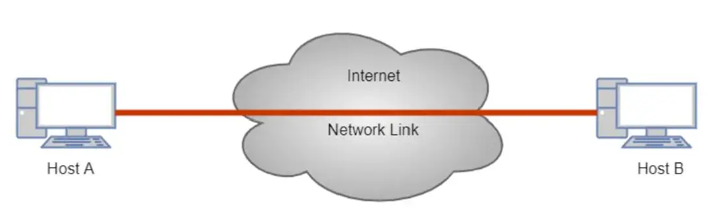
The Problem of Communication
沟通问题
{kind=link}
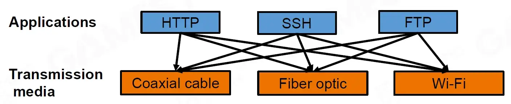
-
Re-implement every application for every new underlying transmission medium?
为每个新的底层传输介质重新实施每个应用程序？
-
Change every application on any change to an underlying transmission medium?
在更改基础传输介质时更改每个应用程序？
-
No! But how does the Internet design avoid this?
不！但是，互联网设计是如何避免这种情况的呢？
Solution: Layering
解决方法：分层
{kind=link}
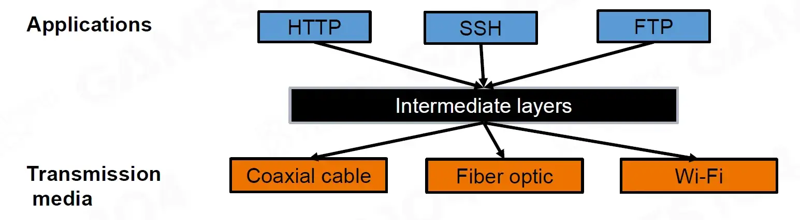
-
Intermediate layers provide a set of abstractions for applications and media
中间层为应用程序和媒体提供了一组抽象
-
New applications or media only need implementation for intermediate layer's interface
新的应用程序或媒体只需要实现中间层的接口
Layering in the internet - OSI Model
互联网分层——OSI 模型
Application 应用层
- Provides functions to users 为用户提供功能
Presentation 表示层
- Converts different representations 转换不同的表示形式
Session 会话层
- Manages task dialogs 管理任务对话框
Transport 传输层
- Provides end-to-end delivery 提供端到端交付
Network 网络层
- Sends packets over multiple links 通过多个链路发送数据包
Data Link 数据链路层
- Sends frames of information 发送信息帧
Physical 物理层
- Sends bits as signals 以信号形式发送比特
{kind=link}
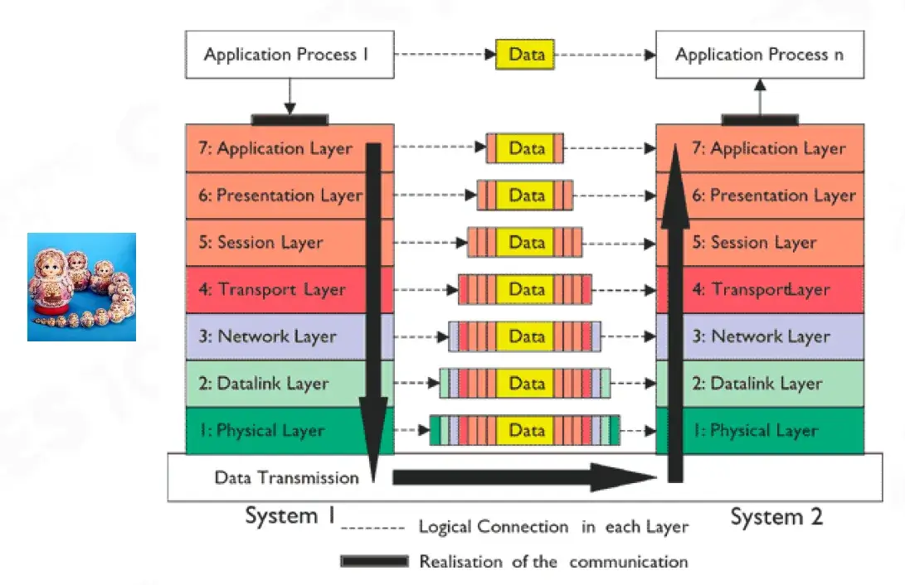
Network Socket-based Communication
基于网络套接字的通信
{kind=link}
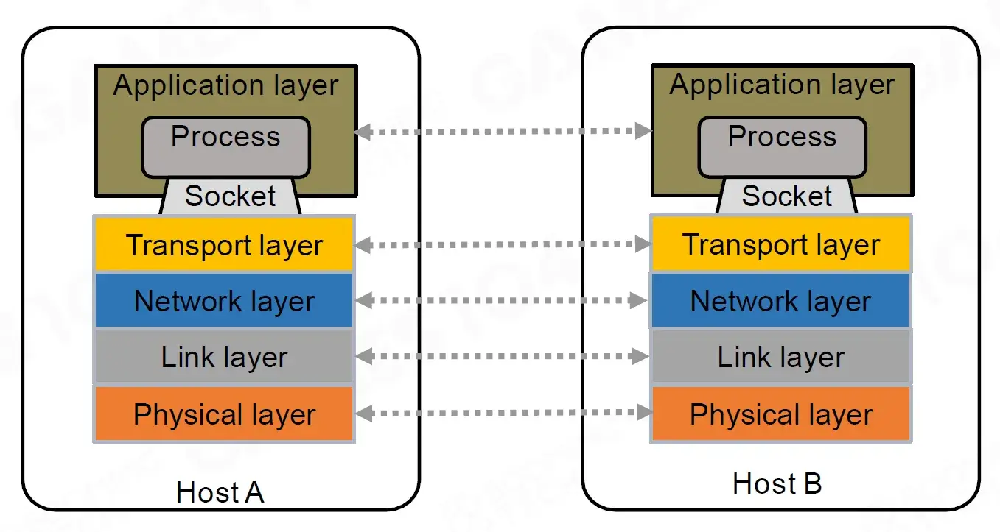
Socket
套接字
A software structure within a network node of a computer network that serves as an endpoint for sending and receiving data across the network.
计算机网络的网络节点内的软件结构，用作通过网络发送和接收数据的端点。
A Socket is combination of an lP Address and a Port Number.
Socket 是 IP 地址和端口号的组合。
{kind=link}
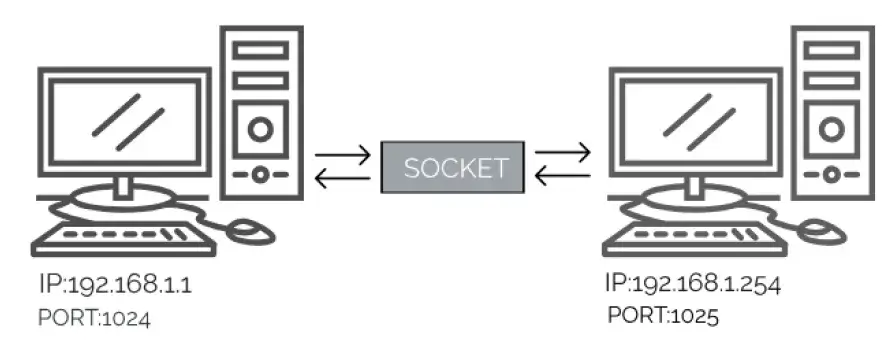
// server side
struct sockaddr_in saddr, caddr;
int sockfd, clen, isock;
unsigned short port = 80;
if ((sockfd=Socket(AF INET,SOCK STREAM,0) < 0) {
printf("Error creating socket\n");
...
}
memset(&saddr, '\0', sizeof(saddr)); // zero structure out
saddr.sin family = AF INET; // match the socket() call
saddr.sin addr.s addr = htonl(INADDR ANY); // bind to any local addresss
addr.sin port = htons(port); // specify port to listen on
if((bind(sockfd, (struct sockaddr *)&saddr, sizeof(saddr)) < 8) { // bind
printf("Error binding\n");
...
}
if(listen(sockfd, 5) < 0) { // listen for incoming connections
printf("Error listening\n");
...
}
clen=sizeof(caddr)
if((isock=accept(sockfd, (struct sockaddr *)&caddr, &clen)) < 8) { // accept one
printf("Error accepting\n");
...
}Setup Socket
安装套接字
Both client and server need to setup the socket
客户端和服务器都需要设置套接字
-
Function
int socket(int domain, int type, int protocol)-
domain
-
AF_INET-- IPV4 -
AF_INET6-- IPV6...
-
type
-
SOCK_STREAM-- TCP -
SOCK_DGRAM-- UDP...
-
-
protocol
- 0
-
-
E0
int sockfd = socket(AF_INET, SOCK_STREAM, 0)
-
Transmission Control Protocol (TCP)
传输控制协议（TCP）
-
Connection-Oriented
面向连接
-
Reliable and Ordered
可靠且有序
-
Flow Control
流量控制
-
Congestion Control
拥堵控制
{kind=link}
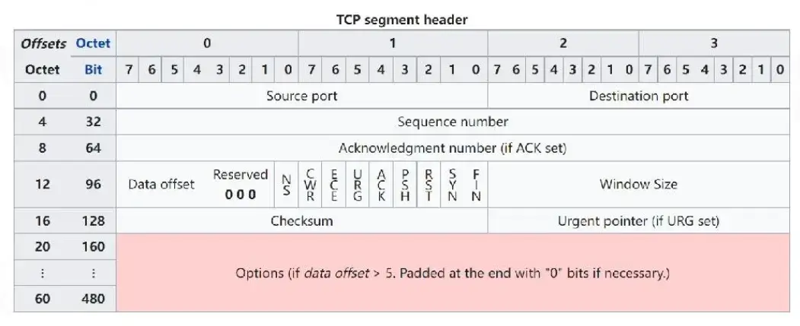
TCP Retransmission Mechanisms
TCP 重传机制
Duplicate ACKs
重复 ACK
-
Senders sends packets and seqnos
发送方发送数据包和序列号
- 1,2, 3, 4, 5, 6, 7, 8
-
Assume 5th packet (seqno 5) is lost, Streamof ACKs will be
假设第 5 个数据包（序列号 5）丢失，则 ACK 流将
- 1, 2, 3, 4, 4, 4, 4
{kind=link}
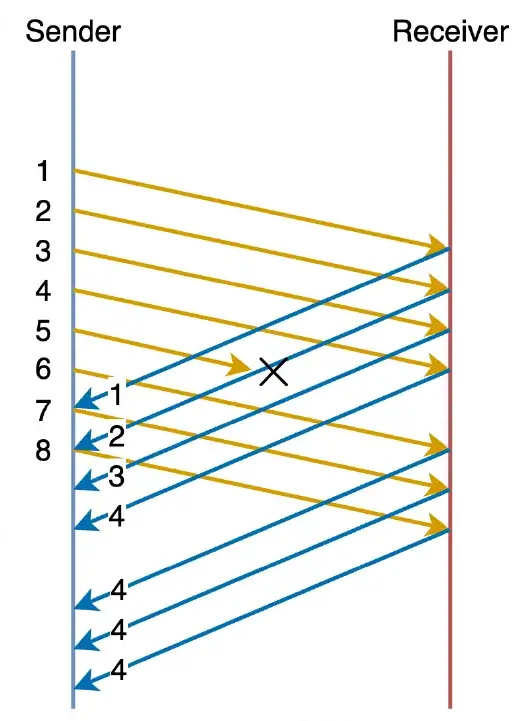
TCP congestion control
TCP 拥塞控制
-
The congestion window (CWND) of TCP starts to grow from a small value
TCP 的拥塞窗口（CWND）从一个小值开始增长
-
When congestion occurs, packet loss or timeout, CWND will be reduced according to a certain algorithm
当发生拥塞、丢包或超时时，CWND 将根据特定算法减少
-
This leads to high delay and cause delay jitter
这会导致高延迟并导致延迟抖动
{kind=link}
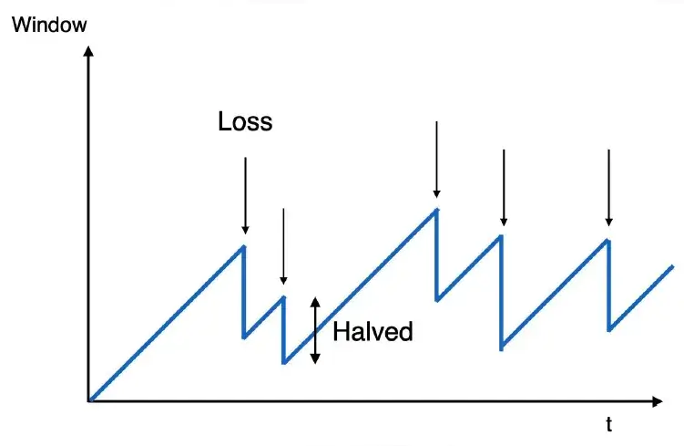
As the main transmission protocol on the lnternet, TCP congestion control is necessary, otherwise it will cause congestion collapse. TCP congestion control is the main congestion control measure on the Internet, and it is also the main cause of TCP performance problems.
作为互联网上的主要传输协议，TCP 拥塞控制是必要的，否则会导致拥塞崩溃。TCP 拥塞控制是互联网上主要的拥塞控制措施，也是 TCP 性能问题的主要原因。
User Datagram Protocol (UDP)
用户数据报协议（UDP）
David P. Reed
He was involved in the early developmentof TCP/lP, and was the designer of the User Datagram Protocol (UDP), thoughhe finds this title "a little embarrassing".
他参与了 TCP/lP 的早期开发，是**用户数据报协议（UDP）**的设计者，尽管他觉得这个头衔“有点尴尬”。
He was also one of the authors of theoriginal paper about the end-to-end principle, End-to-end arguments insystem design, published in 1984.
他也是 1984 年发表的关于端到端原理系统设计中的端到端论证的原始论文的作者之一。
UDP Features
UDP 功能
UDP (User Datagram Protocol)
UDP（用户数据报协议）
-
Connectionless
无连接
-
UnReliable and Unordered
不可靠和无序
-
NO Flow Control
无流量控制
-
NO Congerstion Control
无堵塞控制
{kind=link}
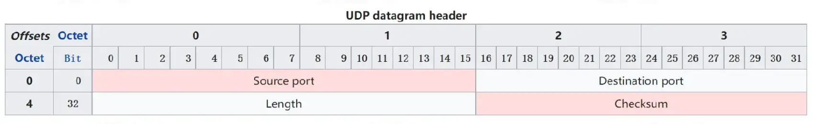
Network Protocols Usage in Game
Game suitable for use
-
TCP
炉石
-
UDP
守望先锋、CSGO
| TCP | UDP | |
|---|---|---|
| Structure 结构 | Segments 部分 | Datagrams 数据报 |
| Connection Model 连接模型 | Connection-Oriented 面向连接的 | Connectionless 无连接的 |
| Speed 速度 | Slow 慢 | Fast 快 |
| Reliability 可靠性 | Reliable 可靠 | Unreliable 不可靠 |
| Header 标头 | 20 Bytes | 8 Bytes |
| Data Transfer 数据传输 | Ordered 有序的 | Unordered 无序的 |
| Control 控制 | Flow Control 流量控制 | NO Flow Control 无流量控制 |
Reliable UDP
可靠 UDP，在 UDP 的基础上加以改进。
TCP is Not Time Critical
TCP 不重视及时性
-
TCP is the complex and heavyweight protocol. lt provides reliable delivery and advanced features, but it has more overhead.
TCP 是复杂而重量级的协议。它提供可靠的交付和高级功能，但开销更大。
-
TCP is a fair, traffic oriented protocol designed to improve bandwidth utilization. But it's not designed for speed.
TCP 是一种公平的、面向流量的协议，旨在提高带宽利用率。但它不是为速度而设计的。
-
So Why TCP is slow?
为什么 TCP 很慢？
UDP is Fast but Unreliable
UDP 速度快但不可靠
-
UDP is lightweight and fast but unreliable, packet loss and disorder will occur.
UDP 是轻量级和快速的，但不可靠，会发生数据包丢失和混乱。
-
How to achieve reliable and real-time communication?
如何实现可靠和实时的通信？
Why We Need to Customize Protocol
为什么我们需要定制协议
-
Game Server
游戏服务器
-
Keep-alived connection (TCP)
保持有效连接（TCP）
-
Need keep logic consistency in "order" (TCP)
需要保持“顺序”（TCP）中的逻辑一致性
-
High responsive & low latency (UDP)
高响应和低延迟（UDP）
-
Broadcast commonly used (UDP)
常用广播（UDP）
-
-
Web Server
Web 服务器
-
Handles the HTTP protocol
处理 HTTP 协议
-
Delivers static web content e.g., HTML pages, files, images, video.
提供静态网络内容，例如 HTML 页面、文件、图像、视频。
-
Acknowledgement & Sequence Number
确认和序列号
-
Positive acknowledgment (ACK) is a signal that is passed between communicating processes, computers, or devices to signify acknowledgment, or receipt of message
**肯定应答（ACK）**是在通信进程、计算机或设备之间传递的信号，表示确认或收到消息
-
Negative ACK (NACK or NAK) is a signal that is sent to reject a previously receivedmessage or to indicate some kind of error
**否定 ACK（NACK 或 NAK）**是一种信号，用于拒绝之前接收到的消息或指示某种错误
-
Sequence number (SEQ) is a counter used to keep track of every byte sent outward bya host
**序列号（SEQ）**是一个计数器，用于跟踪主机向外发送的每个字节
-
Timeouts specified periods of time allowed to elapse before an acknowledgment is tobe received
超时在收到确认之前允许经过的特定时间段
Automatic Repeat Request (ARQ)
自动重复请求（ARQ）
An error-control method for data transmission that uses ACK and timeouts to achieve reliable data transmission over an unreliable communication channel.
一种用于数据传输的错误控制方法，该方法使用 ACK 和超时来在不可靠的通信信道上实现可靠的数据传输。
If the sender does not receive an acknowledgment before the timeout, it re-transmits thepacket until it receives an acknowledgment or exceeds a predefined number of retransmissions.
如果发送方在超时之前没有收到确认，它会重新发送数据包，直到收到确认或超过预定义的重新传输次数。
-
Sliding window protocol
滑动窗口协议
-
Stop-and-Wait ARQ
停止并等待 ARQ
-
Go-Back-N ARQ
-
Selective Repeat ARQ
选择性重复 ARQ
-
Sliding Window Protocol
滑动窗口协议
-
Send mutilple frames at a time, number of frames to be sent is based on Window size
一次发送多个帧，要发送的帧数基于窗口大小
-
Each frame is numbered by Sequence number
每帧按序列号编号
-
When the frame at the front of the window is received, the window slides
当收到窗户前部的框架时，窗户会滑动
{kind=link}
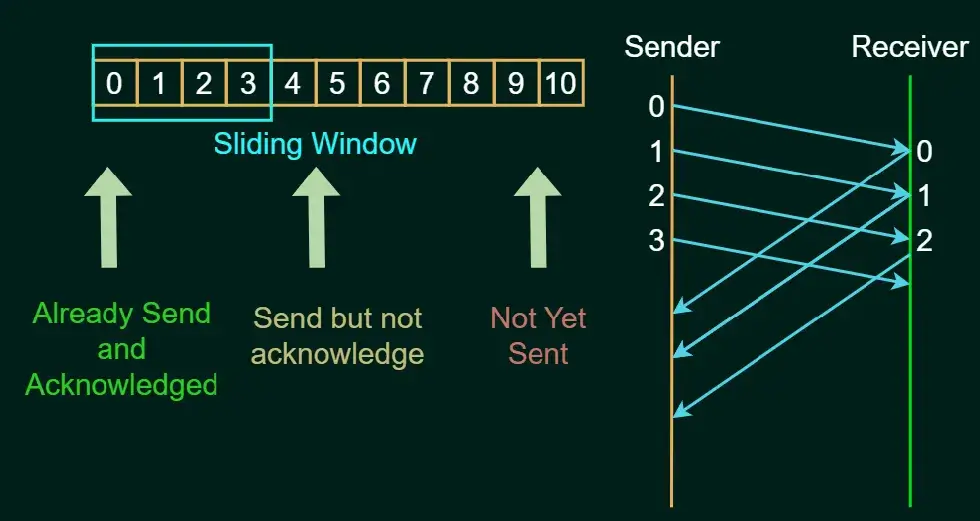
{kind=link}
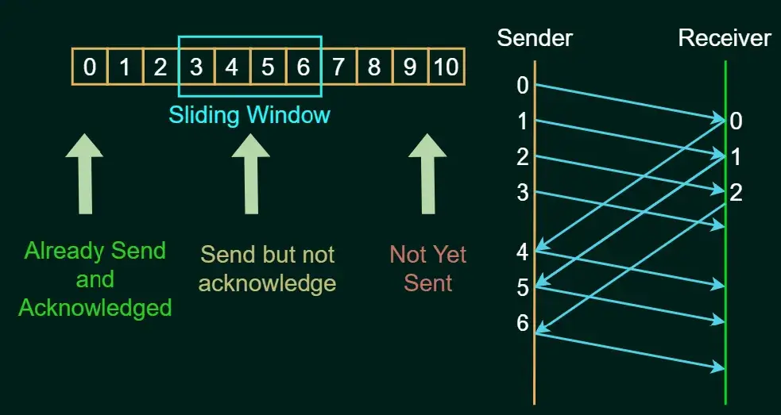
Stop-and-Wait ARQ
停止并等待 ARQ
-
Windows size = 1
窗口大小 = 1
-
After transmitting one frame, the sender waits for an ACK before transmitting the next frame
发送一帧后，发送方在发送下一帧之前等待 ACK
-
If the ACK does not arrive after a certain time, the sender times out and retransmits the original frame
如果 ACK 在特定时间后未到达，则发送方超时并重新传输原始帧
-
Poor utilization of bandwidth, poor performance
带宽利用率低，性能差
{kind=link}
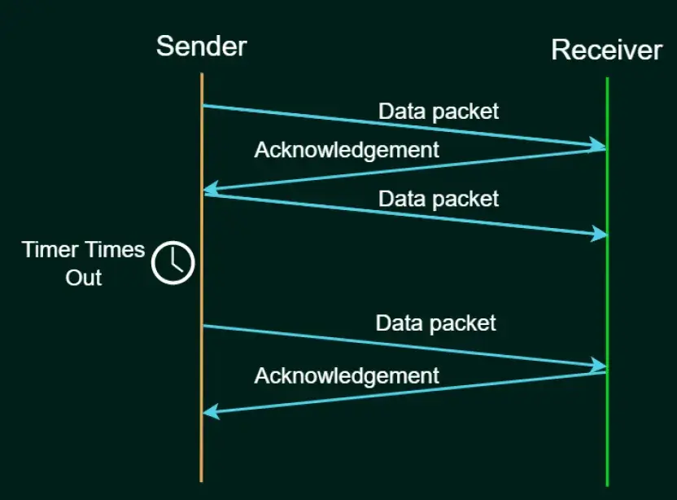
Go-Back-N ARQ
-
N is Sender's Windows Size
N 是发件人的窗口大小
-
The Receiver only sends cumulative ACK
接收器仅发送累积 ACK
-
If an ACK is not received within an agreed-upon time period, all frames in the current window are transmitted
如果在商定的时间段内未收到 ACK，则传输当前窗口中的所有帧
{kind=link}
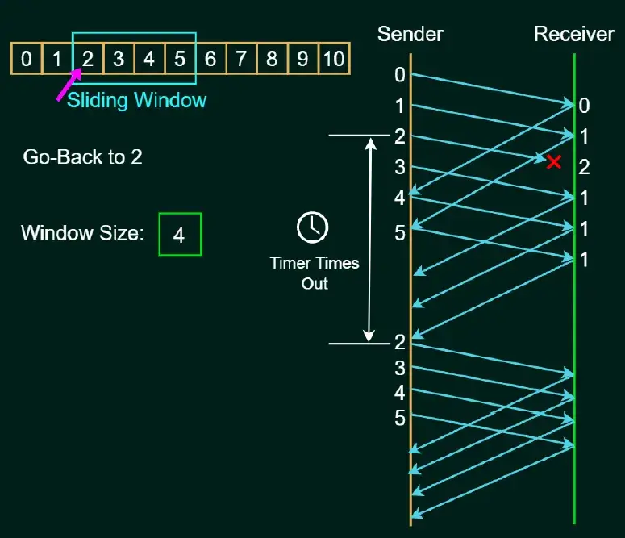
Selective Repeat ARQ
选择性重复 ARQ
-
In Selective Repeat ARQ, only the damaged or lost frames are retransmitted
在选择性重复 ARQ 中，只有损坏或丢失的帧会被重新传输
-
The receiver sends the ack of each frame, and the sender maintains the timeout time of each frame
接收方发送每帧的 ack，发送方保持每帧的超时时间
-
When receiver receive damaged packet, it willsend a NACK, The sender will send/retransmitframe for which NACK is received
当接收方收到损坏的数据包时，它将发送一个 NACK。发送方将发送/重新发送收到 NACK 的帧
{kind=link}
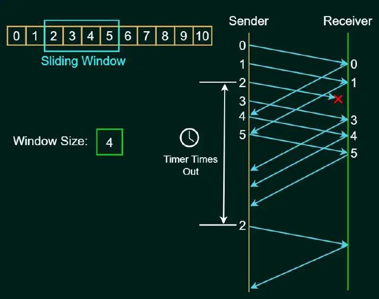
Make UDP Reliable in Packet Loss Scenario
在丢包情况下使 UDP 可靠
With the increase of packet loss rate and delay, the reliable UDP can not meet the transmission requirements gradually.eg. lf packet loss rate increase to 20%, use reliable UDP is still with high delay.
随着丢包率和延迟的增加，可靠的 UDP 逐渐无法满足传输要求。例如，如果丢包率增加到 20%，使用可靠的 UDP 仍然具有高延迟。
{kind=link}
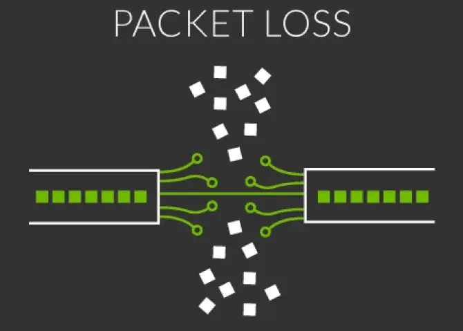
Forward Error Correction (FEC)
前向纠错（FEC）
-
The transmission of enough additiona, redundant information with the primary data stream to reconstruct lost lP packets up to a certain extent
与主数据流一起传输足够的附加、冗余信息，以在一定程度上重建丢失的 IP 数据包
{kind=link}
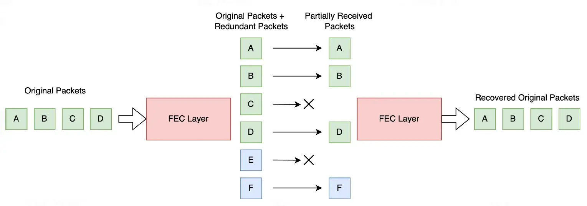
XOR-FEC
| A | B | A XOR B |
|---|---|---|
| 0 | 0 | 0 |
| 0 | 1 | 1 |
| 1 | 0 | 1 |
| 1 | 1 | 0 |
| Law 律 | Desc 描述 |
|---|---|
| Law of identity 同一律 | A xor 0 = A |
| Zeroing law 零律 | A xor A = 0 |
| Commutative law 交换律 | A xor B = B xor A |
| Associative law 结合律 | A xor (B xor C) = (A xor B) xor C |
C = A xor B
A = A xor (B xor B) = (A xor B) xor B = C xor B
B = (A xor A) xor B = A xor C
- There are four packets A, B, C, D
- Let E = XOR (A, B, C, D)
- A = XOR (B, C, D, E)
- B = XOR (A, C, D, E)
- C = XOR (A, B, D, E)
- D = XOR (A, B, C, E)
{kind=link}
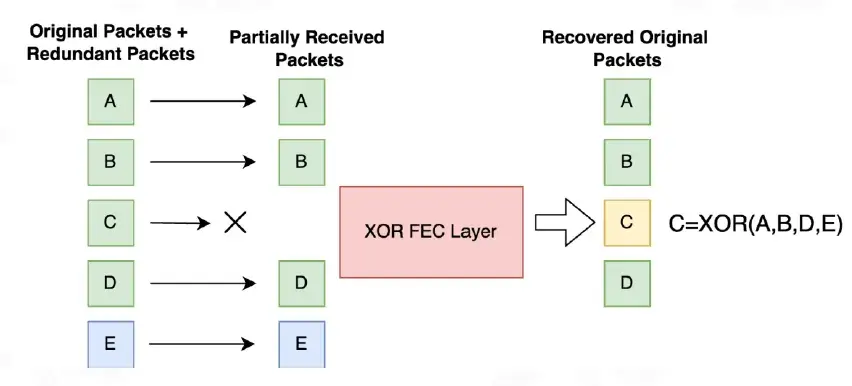
If any packet is lost, it can be recovered with the other four packets.
如果任何一个数据包丢失，可以用其他四个数据包恢复。
Only one packet can be lost in continuous data. lf and are lost at the same time, the algorithm cannot recover.
连续数据中只能丢失一个数据包。如果 和 同时丢失，则算法无法恢复。
Reed-Solomon Codes
里德-所罗门码
There are valid data, and FEC data are expected to be generated
有 个有效数据，预计将生成 个 FEC 数据
-
Form valid data into a unit vector
将 个有效数据转换为单位向量
-
Generate a transformation matrix : it is composed of a -order identity matrix and a Vandemode matrix (The matrix composed of any n rows of matrix is reversible)
生成一个变换矩阵 ：它由一个 阶恒等式矩阵和一个 Vandemode 矩阵组成（该矩阵由以下任意 行组成矩阵 是可逆的）
-
The matrix obtained by multiplying the matrix and Vector contains redundant FEC data
通过将矩阵带向量 相乘获得的矩阵 包含 个冗余 FEC 数据
{kind=link}
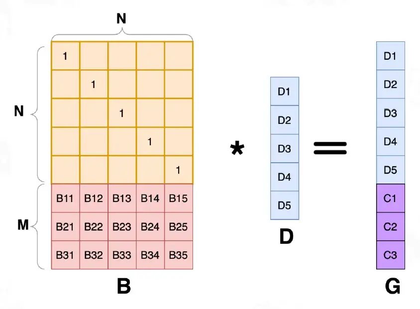
Assume , , are lost
假设 、、 丢失
-
The matrix also needs to delete the corresponding rows to obtain a deformation matrix of
矩阵还需要删除相应的 行，以获得 的变形矩阵
{kind=link}
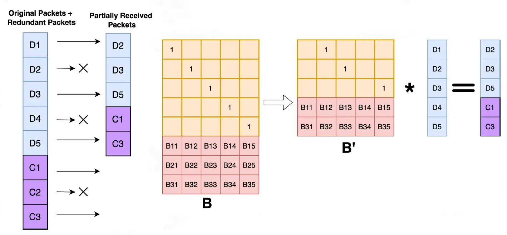
-
Inverse matrix get
逆矩阵 得到
-
Multiply on both sides to recover the original data
将两侧的 相乘以恢复原始数据
{kind=link}
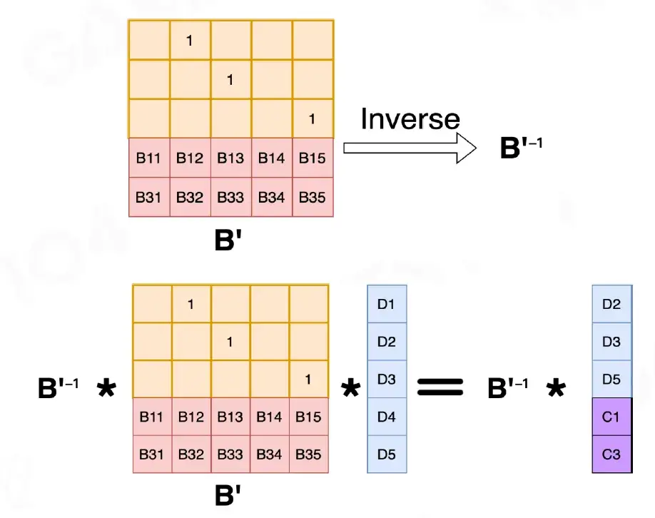
Customize Your UDP based on ARQ and FEC
基于 ARQ 和 FEC 自定义 UDP
Reliability
可靠性
-
Use Selective Repeat ARQ
使用选择性重复 ARQ
Hybrid ARQ and FEC
混合 ARQ 和 FEC
-
Before ARQ, FEC is used for error correction
在 ARQ 之前，FEC 用于纠错
Real-time
实时
-
Smaller RTO growth
RTO 增长较小
-
No congestion control
无拥堵控制
-
Fast retransmission mechanism
快速重传机制
-
No delay ACK
无延迟确认
Flexibility
灵活性
-
Design protocol for speed
速度设计协议
-
Support both reliable and unreliable transmission
支持可靠和不可靠的传输
Clock Synchronization
时钟同步
RTT
Round-Trip Time
往返时间
-
Send/Recv delay
发送/接收延迟
-
Propagation delay
传播延迟
-
Response time of the origin server
源服务器的响应时间
RTT vs. Ping
-
Ping tests are usually performed within a transport protocol that uses lCMP packets
Ping 测试通常在使用 lCMP 数据包的传输协议中执行
-
RTT is measured at the application layer
RTT 在应用层进行测量
RTT vs. Latency
-
Latency is the time required for a data packet to travel from the sending endpoint to the receivingend point (only one trip)
延迟是数据包从发送端点传输到接收点所需的时间（仅一次行程）
{kind=link}
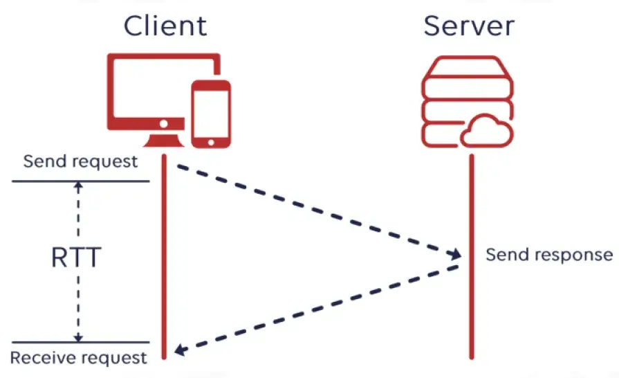
Network Time Protocol (NTP)
网络时间协议（NTP）
Network lime Protocol is an internet protocol used tosynchronize with computer clock time sources in a network.
网络时间协议是一种用于与网络中的计算机时钟时间源同步的互联网协议。
-
Reference clock
参考时钟
-
GPS clock or radio ransmiiting station
GPS 时钟或无线电传输站
-
Amazinglly precise timekeeping devices such as atomic clocks
令人惊叹的精确计时设备，如原子钟
-
Not connected to the internet
未连接到互联网
-
Send their time through radio or optical fiber
通过无线电或光纤发送他们的时间
-
Time Server Stratums
时间服务器层
Stratum Values
-
Degrees of separation from the reference clock
与参考时钟的分离程度
-
Reference clock has stratum value of 0
参考时钟的层值为 0
-
Servers with stratum value 1 is called primary time servers
层值为 1 的服务器称为主时间服务器
-
If a device's stratum value is over 15, its time is not trustworthy
如果设备的层值超过 15，则其时间不可信
-
Device will choose server with less stratum value automatically when correcting time
设备在校正时间时会自动选择层值较小的服务器
{kind=link}
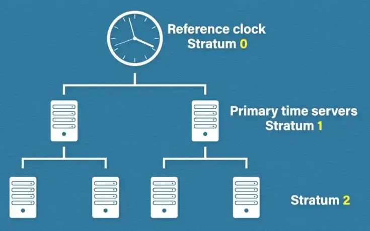
NTP Algorithm
NTP 算法
Use NTP is quite simple, just like this
使用 NTP 非常简单，就像这样
-
Client ask time server for time
客户端向时间服务器请求时间
-
Server receives the request and reply
服务器接收请求和回复
-
Client receives the reply
客户端收到回复
But we have to do something with the Delay!
但我们必须对延迟做点什么！
{kind=link}
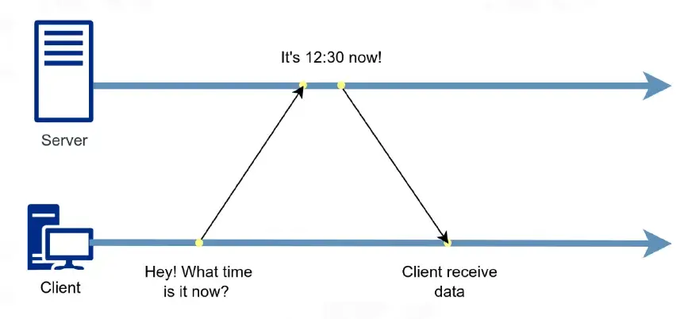
We recordes 4 timestamps as
{kind=link}
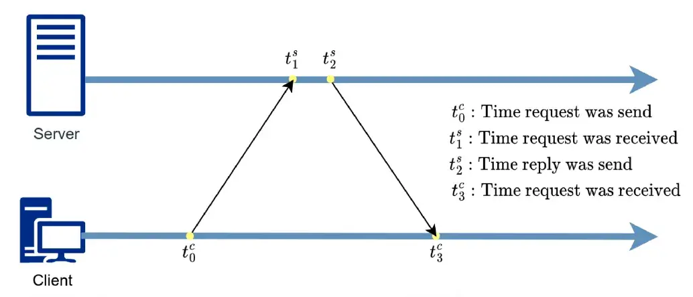
The implicit assumption that the one way delay is statistically half the roundtrip delay
单向延迟在统计上是往返延迟的一半的隐含假设
Local-clock correction is computed from the offset data by.
根据偏移数据计算本地时钟校正。
*The delay and clock-offset samples obtained can be filtered using maximum-likelihood technigues
*获得的延迟和时钟偏移样本可以使用最大似然技术进行滤波
Let's take an example:
让我们举一个例子：
It's 17:01:00 on the client
- is 17:01:00
- is 17:01:32
- is 17:01:33
- is 17:01:05
It's 17:01:30 on the server
(17:01:30)
(17:01:32)
(17:01:33)
(17:01:35)
Round Trip Delay = (05 - 00) - (33 - 32) = 4s
Offset = (32 - 00 + 33 - 05) / 2 = 30s
So at client's time is corrected to:
Stream-Based Time Synchronization with Elimination of Higher Order Modes
基于流的时间同步，消除高阶模式
1. Client stamps current local time on a "time request" packet and sends to server
客户端在“时间请求”数据包上标记当前本地时间并发送到服务器
2. Upon receipt by server, server stamps server-time and returns
服务器收到后，服务器标记服务器时间并返回
3. Upon receipt by client, a time delta is calculated by delta = (current Time-sent Time) / 2
客户端收到后，通过 delta=（当前发送时间）/2 计算时间增量
So far this algorithm is very like to NTP
到目前为止，该算法与 NTP 非常相似
4. The first result should immediately be used toupdate the clock
第一个结果应立即用于更新时钟
5. The client repeats Steps 1-3 (NTP-like process), five or more times
客户端重复步骤1-3（类似 NTP 的过程）五次或更多次
6. The results of the packet receipts are accumulatedand sorted in ascending order by latency
数据包接收的结果按延迟升序累积和排序
7. All samples above that are approximately 1.5 times the median are discarded, and the remaining samples are averaged using an arithmetic mean
丢弃上述约为中位数 1.5 倍的所有样本，并使用算术平均值对剩余样本进行平均
{kind=link}
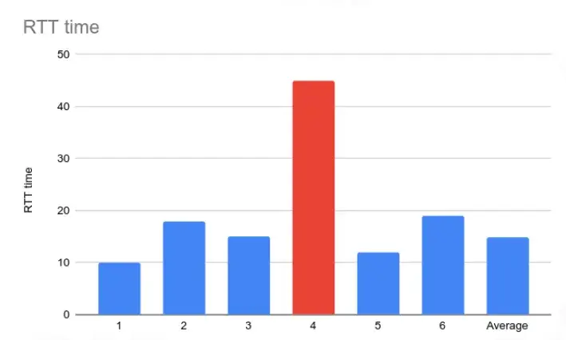
Remote Procedure Call (RPc)
远程过程调用（RPC）
Socket Programming: Still not Great
Socket 编程：仍然不太好
-
Lots for the programmer to deal with every time
程序员每次都要处理很多事情
-
How to separate different requests on the same connection?
如何在同一连接上分离不同的请求？
-
How to write bytes to the network/read bytes from the network?
如何向网络写入字节/从网络读取字节？
-
What if Host A's process is written in Go and Host B's process is in C++?
如果主机 A 的进程是用 Go 编写的，而主机 B 的进程是 C++ 编写的呢？
-
What to do with those bytes?
如何处理这些字节？
-
-
Still pretty painful... have to worry a lot about the network
仍然很痛苦…不得不非常担心网络
-
Have you received the message?
你收到消息了吗？
-
Communication with Messages
消息通信
{kind=link}
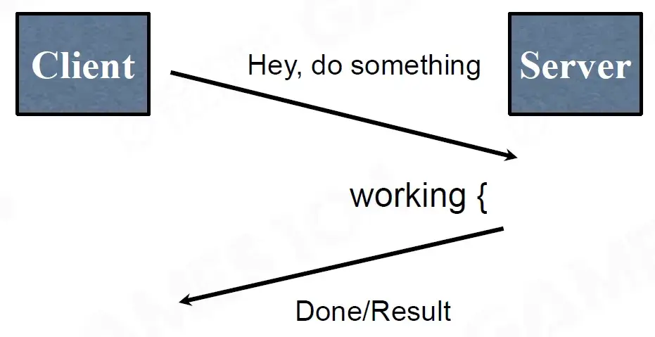
Communication Way
沟通方式
Initially, people "hand-coded" messages to send requests and responses
最初，人们“手工编码”消息以发送请求和响应
-
Message is a stream of bytes-"op codes" and operands
消息是字节流-“操作码”和操作数
Lots of drawbacks
很多缺点
-
Need to worry about message format
需要担心消息格式
-
Have to pack and unpack data from messages
必须从消息中打包和解包数据
-
Servers have to decode messages and dispatch them to handlers
服务器必须解码消息并将其分派给处理程序
-
Messages are often asynchronous
消息通常是异步的
-
After sending one, what do you do until the response comes back?
发送一个后，在收到回复之前，你会做什么？
-
-
Messages aren't a natural programming mode
消息不是一种自然的编程模式
struct foomsg {
uint32 _t len;
};
void send_foo(char *contents) {
int msglen = sizeof(struct foomsg) + strlen(contents);
char buf = malloc(msglen);
struct foomsg *fm = (struct foomsg *)buf;
fm->len = htonl(strlen(contents));
memcpy(buf + sizeof(struct foomsg), contents, strlen(contents));
write(outsock,buf, msglen);
}More Challenges on Logic Communication
逻辑通信面临更多挑战
-
For a remote procedure call, a remote machine may:
对于远程过程调用，远程机器可以：
-
Run process written in a different language
运行用其他语言编写的进程
-
Represent data types using different sizes
使用不同大小表示数据类型
-
Use a different byte ordering (endianness)
使用不同的字节顺序（字节序）
-
Represent floating point numbers differently
以不同的方式表示浮点数
-
Have different data alignment requirements
有不同的数据对齐要求
e.g., 4-byte type begins only on 4-byte memory boundary
例如，4 字节类型仅在 4 字节内存边界上开始
-
Remote Procedure Call (RPC)
远程过程调用（RPC）
-
RPC is a reguest-response protocol. An RPC is initiated by the cient, which sends a reguest message to a known remote server to execute a specified procedure with supplied parameters
RPC 是一种规范的响应协议。RPC 由 cient 发起，它向已知的远程服务器发送一条规则消息，以使用提供的参数执行指定的过程
-
Goals
目标
-
Ease of programming
易于编程
-
Hide complexity
隐藏复杂性
-
Familiar model for programmers (just make a function call)
程序员熟悉的模型（只需进行函数调用）
-
{kind=link}
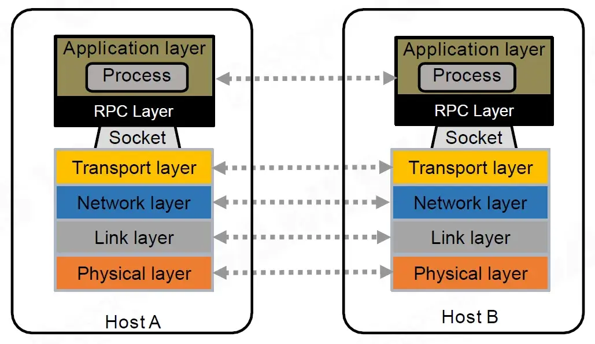
RPC example
- Go language
{kind=link}
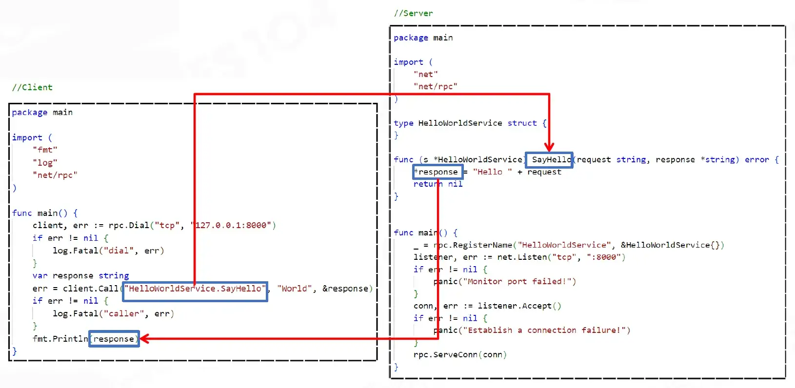
-
Output
Hello World
Why RPC?
为什么选择 RPC？
-
Goal: Easy-to-program network communication that makes client-server communication transparent
目标：易于编程的网络通信，使客户端-服务器通信透明
-
Retains the "feel" of writing centralized code
保留编写集中式代码的“感觉”
-
Programmers needn't think about the network
程序员不必考虑网络
-
Make communication appear like a local procedure call
使通信看起来像本地过程调用
-
-
Don't need to worry about serialization/deserialization for network
无需担心网络的序列化/反序列化
-
Don't need to worry about complexities of network
无需担心网络的复杂性
Interface Definition Language
接口定义语言
-
A server defines the service interface using an interface definition language (lDL)
服务器使用接口定义语言（lDL）定义服务接口
The lDL specifies the names, parameters, and types for allclient-callable server procedures
lDL 指定了所有客户端可调用服务器过程的名称、参数和类型
-
example: ASN.1 in the OSI reference model
示例：OSI 参考模型中的 ASN.1
-
example: Protobuf (Google's data interchange format)
示例：Protobuf（谷歌的数据交换格式）
-
...
-
//polyline.proto
syntax ="proto2";
message Point {
required int32 x = 1;
required int32 y = 2;
optional string label = 3;
}
message Line {
required Point start = 1;
required Point end = 2;
optional string label = 3;
}
message Polyline {
repeated Point point = 1;
optional string label = 2;
}RPC Stubs
-
A client-side stub is a procedure that looks to the client as if it were a callable server procedure
客户端存根是一个过程，它在客户端看起来就像是一个可调用的服务器过程
-
The client program thinks it's invoking the server butit's calling into the client-side stub
客户端程序认为它正在调用服务器，但它正在调用客户端存根
-
-
Aserver-side stub looks like a caller to the server
服务器端存根看起来像是服务器的调用者
-
The server program thinks it's called by the client but it's really called by the server-side stub
服务器程序认为它是由客户端调用的，但实际上是由服务器端存根调用的
-
-
The stubs send messages to each other to make the RPC happen transparently
存根相互发送消息，使 RPC 透明地发生
{kind=link}
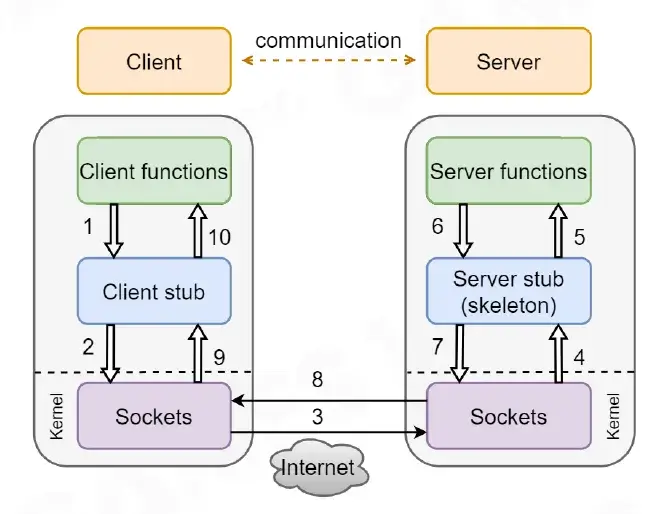
Stub compiler
-
A "stub compiler" reads the IDL declarations and produces two stub procedures for each server procedure
“存根编译器”读取 IDL 声明，并为每个服务器过程生成两个存根过程
-
The server programmer implements the service's procedures and links them with the server-side stubs
服务器程序员实现服务的过程，并将其与服务器端存根链接起来
-
The client programmer implements the client program and links it with the client-side stubs
客户端程序员实现客户端程序并将其与客户端存根链接
-
The stubs manage all of the details of remote communication between client and server
存根管理客户端和服务器之间远程通信的所有细节
-
Real RPC Package vourney
真实 RPC 包凭证
{kind=link}
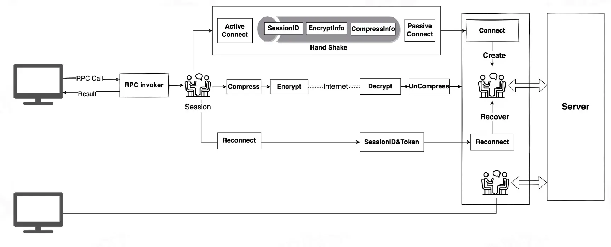
Network Topology
网络拓扑
Original Peer-to-Peer (P2P)
原始点对点（P2P）
-
Each client broadcasts game event to the al others
每个客户端向其他客户端广播游戏事件
-
Robustness
稳健性
-
Cheating is much easier
作弊要容易得多
-
Synchronization is required among all nodesto maintain the consistency of the distributed game state
所有节点之间需要同步，以保持分布式游戏状态的一致性
{kind=link}
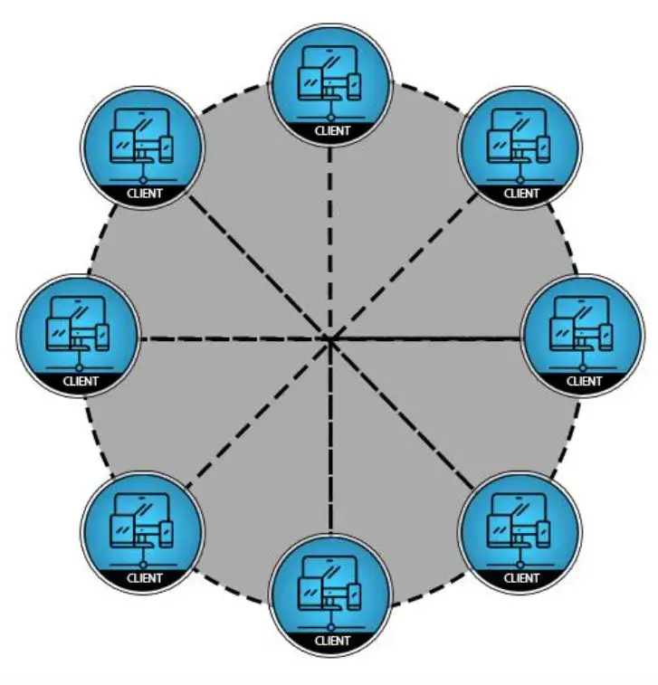
P2P with Host Server
P2P 与主机服务器（如 CS）
-
A player can act as "server", known as host
玩家可以充当“服务器”，即主机
-
If host disconnected, the game may end
如果主机断开连接，游戏可能会结束
-
The host need to handle game actor that cannot be controled by players, such as bot
主机需要处理玩家无法控制的游戏角色，如机器人
{kind=link}
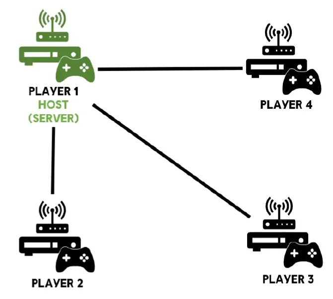
P2P Games
P2P 游戏
-
No rely on server
不依赖服务器
-
Used in Lan commonly
常用于局域网
-
The “Host”is basically in control of the sessions
“主持人”基本上控制着会话
-
A limited number of players at once
一次玩家数量有限
{kind=link}
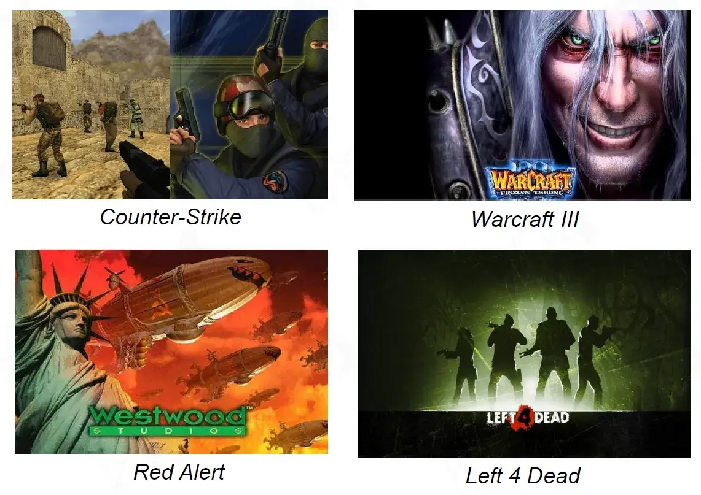
Dedicated Server
专用服务器
-
Authority
权威机构
-
Simulate game world
模拟游戏世界
-
Dispatch data to players
向玩家发送数据
-
High performance requirements
高性能要求
{kind=link}
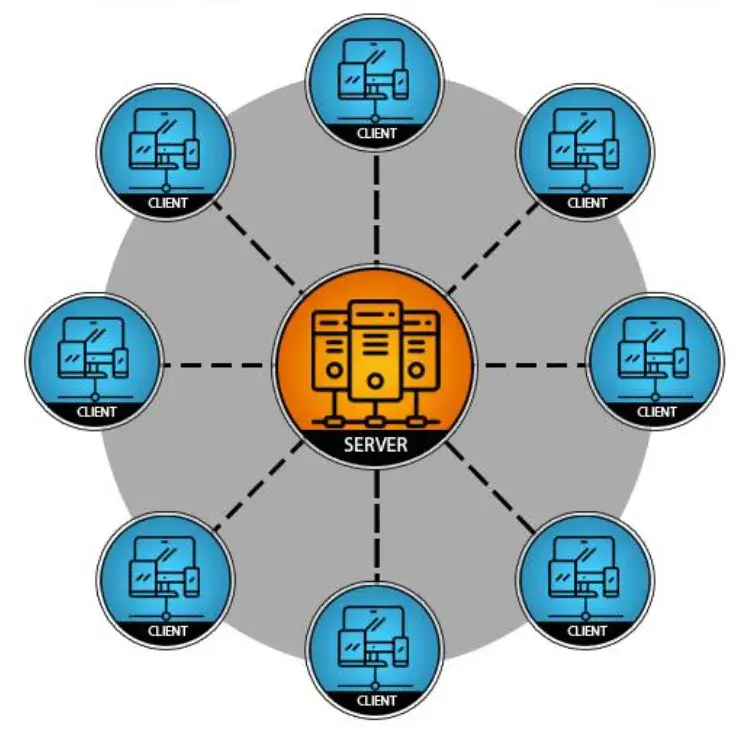
P2P vs Dedicated Server
P2P 与专用服务器
| P2P | Dedicated Server | |
|---|---|---|
| Pros | 1. Robustness 稳健性 2. Removes the "server issues" problem in multiplayer sessions. 消除多人游戏会话中的“服务器问题”问题 3. No extra cost on server 服务器无需额外付费 | 1. Easy to maintain as well as cheating avoidance 易于维护，避免作弊 2. Can handle massive game world 可以处理大型游戏世界 3. Responsiveness of the game is not relay on the network conditions of each individual client 游戏的响应性并不取决于每个客户端的网络状况 |
| Cons | 1. Cheating is much easier 作弊要容易得多 2. Every player needs a decent network connection for game to function properly 每个玩家都需要一个像样的网络连接，游戏才能正常运行 3. Can only handle a limited number of players 只能处理有限数量的玩家 | 1. High cost on server 服务器成本高 2. Much more work on server side program 在服务器端程序上还有更多的工作要做 3. Single point of failure 单点故障 |
When RTT is too high
RTT 过高时
-
When players are in different countries, far away, or when the network environment is complex
当玩家身处不同的国家、遥远的地方，或者网络环境复杂时
-
Use dedicated line and edge gateway to reduce latency
使用专用线路和边缘网关来减少延迟
{kind=link}
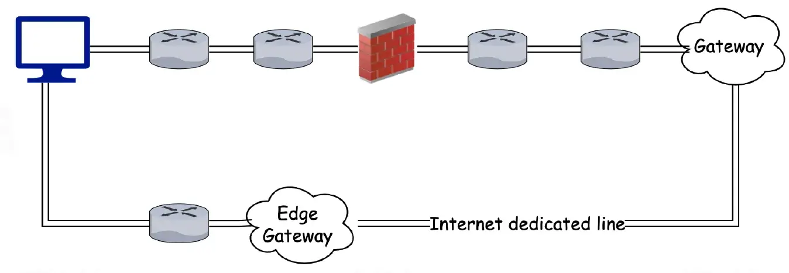
Game Synchronization
游戏同步
Single-Player Gaming
Game Tick
-
Player inputs
玩家输入
-
Convert to game commands
转换为游戏命令
-
Game logic
游戏逻辑
-
Game render
游戏渲染
For Player
对于玩家
-
Player inputs
玩家输入
-
Consistency in each other
彼此的一致性
{kind=link}
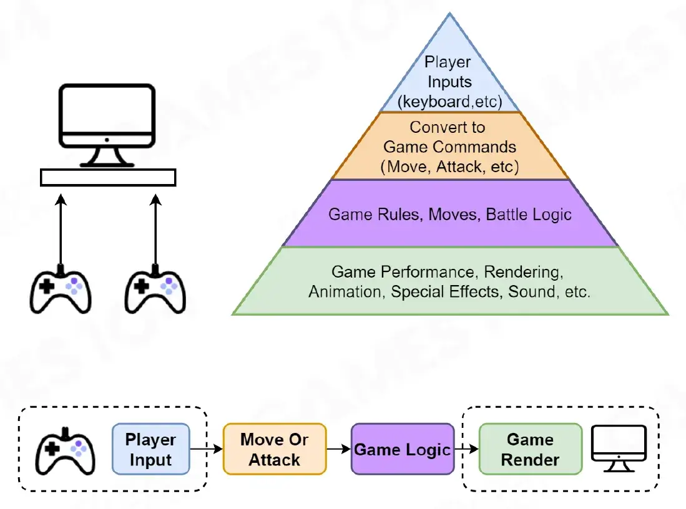
Online Gaming
在线游戏
For Player
对于玩家
-
Player inputs
玩家输入
-
Consistency in each other
彼此的一致性
How to play together at different terminals?
如何在不同的终端上一起玩？
-
Game commands
游戏命令
-
Game Logic
游戏逻辑
{kind=link}
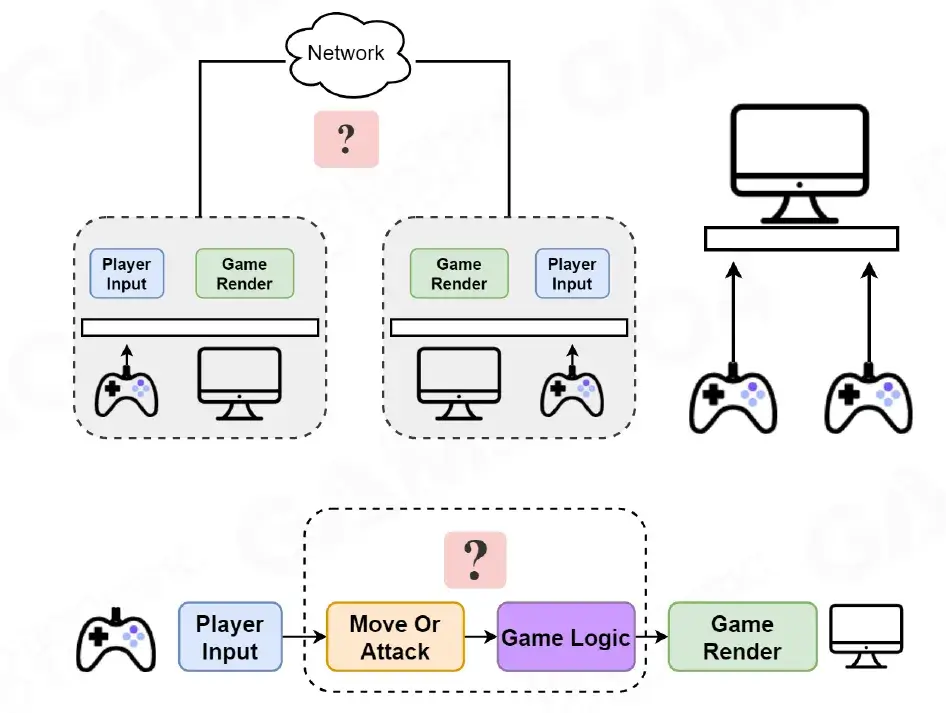
Game Synchronization
游戏同步
To answer the demand for responsive strategies, the synchronization rule is designed to solve the delay and consistency of all destination.
为了满足对响应策略的需求，设计了同步规则来解决所有目的地的延迟和一致性问题。
Synchronization Methods
同步方法
{kind=link}
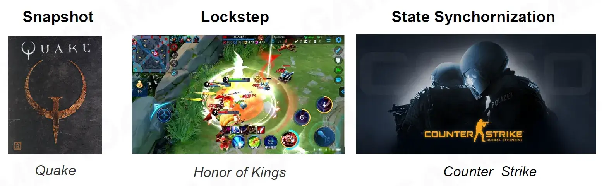
| Snapshot 快照 | Lockstep 锁步 | State Synchornization 状态同步 |
|---|---|---|
| Quake | Honor of Kings 王者荣耀 | Counter Strike 反恐精英 |
Snapshot Synchronization
快照同步
{kind=link}
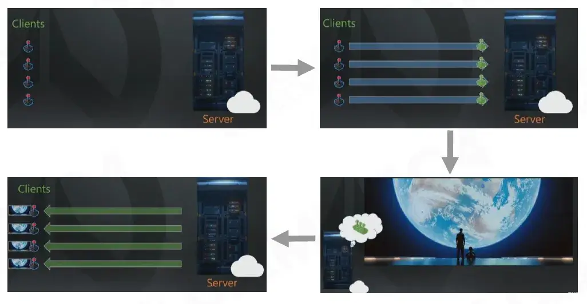
-
Client sends inputs to server
客户端向服务器发送输入
-
Server simulates the game world
服务器模拟游戏世界
-
Generates whole game statesnapshots
生成整个游戏状态快照
-
Sends them down to clients
将它们发送给客户
-
Client updates the display according to the snapshot
客户端根据快照更新显示
Snapshot Synchronization - Jitter and Hitches
快照同步-抖动和挂接
-
Server tick rate is limited
服务器时间速率有限
-
Performance
性能
-
Bandwidth
带宽
Snapshot Interpolation
快照插值
-
Not rendering immediately after snapshot recevied
收到快照后不立即渲染
-
Keep an interpolation buffer
保留插值缓冲区
-
Interpolation between the two delayed snapshots
两个延迟快照之间的插值
Delta Compression
德尔塔压缩
-
Only sync snapshot delta to client
仅将快照增量同步到客户端
-
Example Quake3
{kind=link}
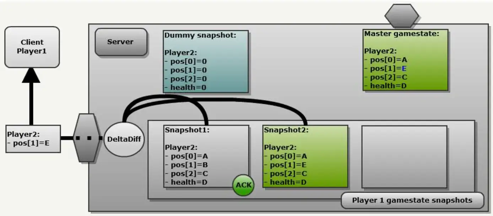
Snapshot Synchorization
快照同步
-
60HZ
-
Max Bandwidth 4.5 mbps
最大带宽 4.5mbps
Delta Compression
德尔塔压缩
-
60HZ
-
Max Bandwidth 676 kbps
最大带宽 676 kbps
Synchronizing Snapshot
正在同步快照
-
Client performance is wasted
客户端性能被浪费
-
High server pressure
服务器压力高
-
High data volume and high bandwidth requirements
高数据量和高带宽要求
-
As games get more complex, snapshots get bigger
随着游戏变得越来越复杂，快照也越来越大
Lockstep Synchronization
锁步同步
Lockstep Origin
锁步原点
Lockstep synchronization, used in military simulation, is by far the simplest techique to ensure consistency
用于军事模拟的锁步同步是迄今为止确保一致性的最简单技术。
-
Same Result
相同的结果
-
Same time
同一时间
-
Same action
同样的行动
No member is allowed to advance its simulation clock until all others members have acknowledged that they are done.
在所有其他成员确认完成之前，任何成员都不允许提前其模拟时钟。
{kind=link}
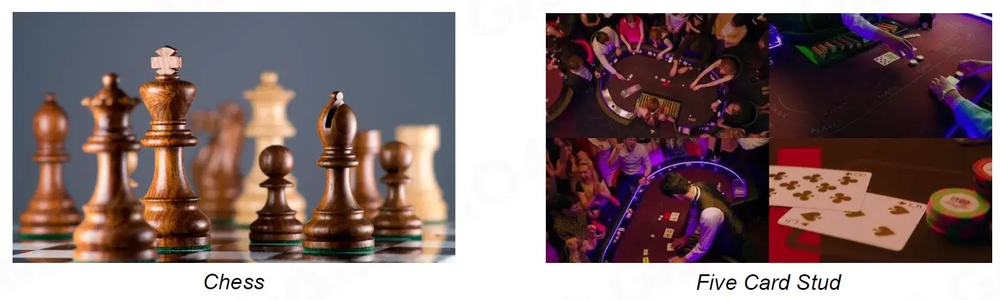
In particular, it is clear that a totally ordered delivery is a sufficient condition to ensure game state consistency across different nodes, as it guarantees that all generated events are reliably delivered according to the same unique order.
特别是，很明显，完全有序的交付是确保不同节点之间游戏状态一致性的充分条件，因为它保证了所有生成的事件都按照相同的唯一顺序可靠地交付。
Lockstep in Online Game
网络游戏中的锁步
Lockstep Principle.
锁步原理。
{kind=link}
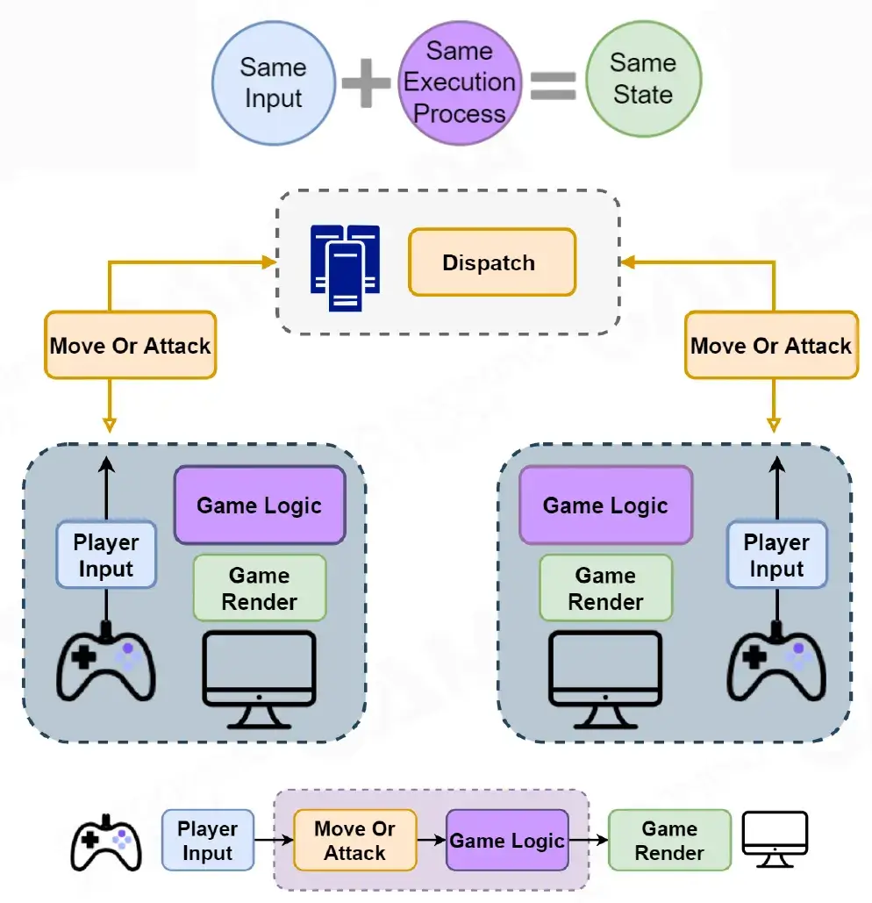
First Game Used Lockstep
第一个游戏使用锁步
-
The network synchronization methodof DOOM (1994) was pointed out in a 2006 paper
2006 年的一篇论文指出了 DOOM（1994）的网络同步方法
-
Lockstep is not mentioned in the paper, but it is now generally accepted that Doom (1994) was the first multiplayer FPS online game to use this type of synchronization
论文中没有提到锁步，但现在人们普遍认为《毁灭战士》（1994）是第一款使用这种同步的多人 FPS 在线游戏
-
It uses P2P architecture
它使用 P2P 架构
{kind=link}
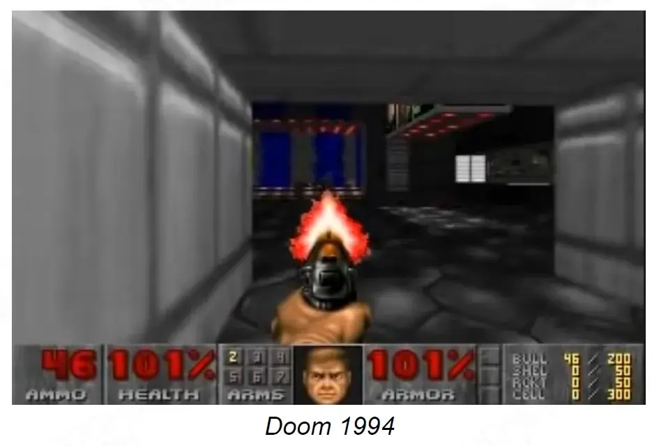
Lockstep initialization
锁步初始化
Loading...
加载…
-
Ensure that the initial data of each client is deterministic
确保每个客户端的初始数据是确定的
-
Game model
游戏模型
-
Static data
静态数据
-
...
-
-
Synchronize clock
同步时钟
Deterministic Lockstep
确定性锁步
-
Client sends inputs to Server
客户端向服务器发送输入
-
Server receives and sorts
服务器接收和排序
-
Wait for input from all clients before forwarding
转发前等待所有客户端的输入
-
After receiving data from the server, the client executes the game logic
在从服务器接收到数据后，客户端执行游戏逻辑
{kind=link}
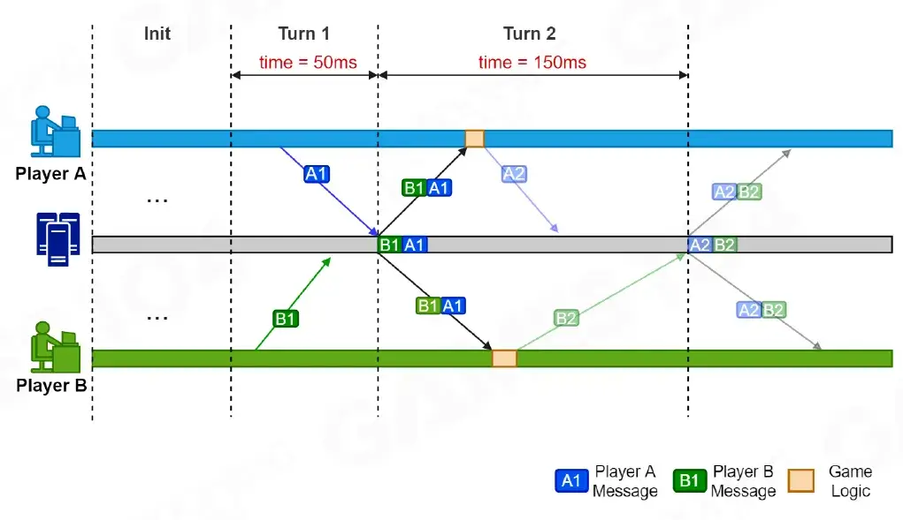
If Player B's message B2 arrives later? (The dotted line B2 in the figure)
如果玩家 B 的消息 B2 稍后到达？（图中虚线 B2）
-
Disadvantages
缺点
-
Game progress depends on slowest player
游戏进度取决于最慢的玩家
-
The delay of the game is notfixed, the experience is not good
游戏的延迟不是固定的，体验不好
-
All the players will wait if a player offline
如果有玩家离线，所有玩家都会等待
-
{kind=link}
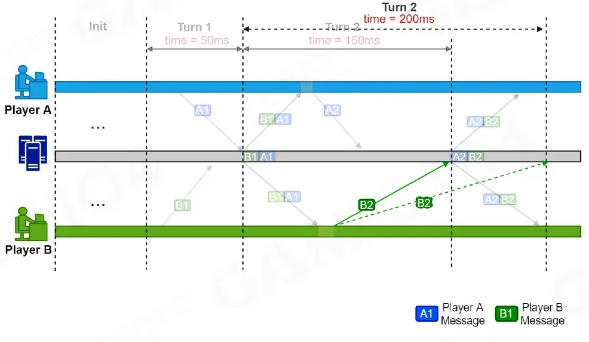
Player Offline in Deterministic Lockstep
确定性锁步中的玩家离线
Waiting for players...
正在等待玩家...
{kind=link}
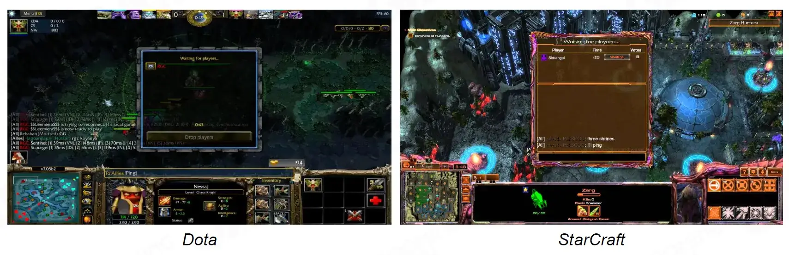
Bucket Synchronization
Bucket 同步
-
Bucket: a fixed time period
Bucket：固定时间段
-
Each bucket
每个水桶
-
Colect all instructions
整理所有说明
-
Broadcast to all players
向所有玩家广播
-
-
There is no need to wait for all players' commands to be received before forwarding
转发前无需等待收到所有玩家的命令
{kind=link}
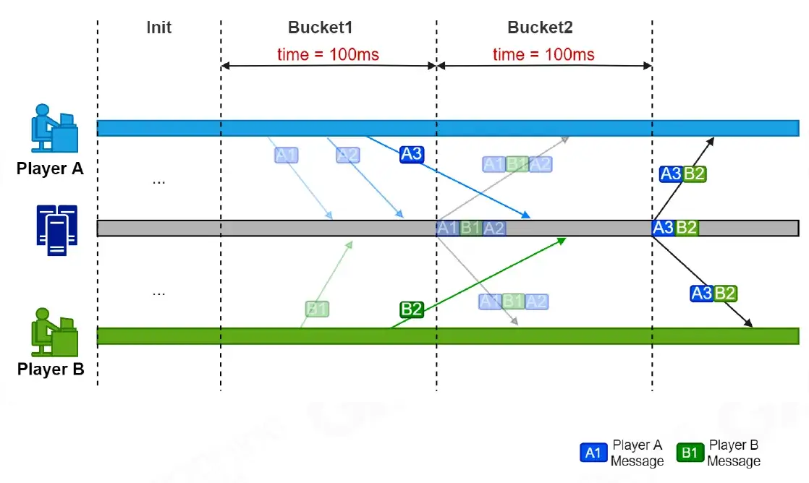
A Good Trade-off between Consistency and Interactivity Maintenance
一致性和交互性维护之间的良好权衡
So we need to find a basis balance between them.
因此，我们需要在它们之间找到一个基本的平衡点。
The threshold:
阈值：
As soon as the measured interactivity degree decreases below a given thresholdtake some procedure skips processing obsolete game events withthe aim of bringing back a satisfactory interactivity level.
一旦测量的交互性降低到给定的阈值以下，一些程序就会跳过处理过时的游戏事件，以恢复令人满意的交互性水平。
{kind=link}
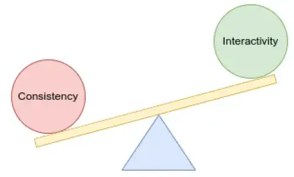
Deterministic Difficulties
确定性难题
-
Deterministic
确定性
-
The same input sequence need to produce the same game state on all machines
相同的输入序列需要在所有机器上产生相同的游戏状态
-
-
Deterministic is Hard
确定性很难
-
Floating point
浮点型
-
Random number
随机数
-
Containers and algorithms (sort, add, remove, etc.)
容器和算法（排序、添加、删除等）
-
Math tools (vectors, quaternions, etc)
数学工具（向量、四元数等）
-
Physics simulation (very difficult)
物理模拟（非常困难）
-
Code logic execution order
代码逻辑执行顺序
-
{kind=link}
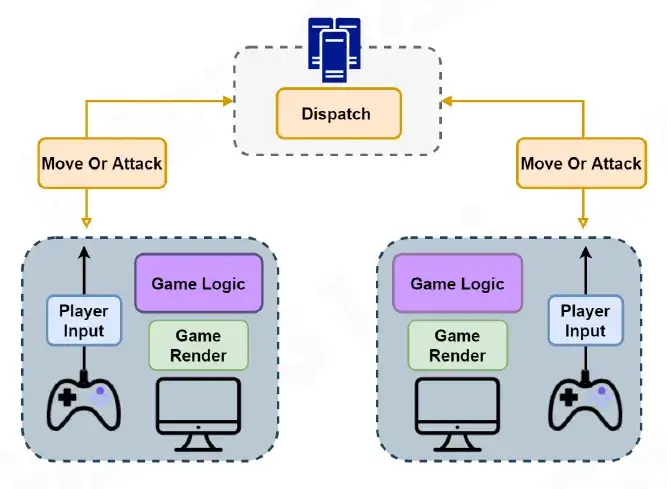
Floating Point Numbers
浮点数
-
Because of the computer binary, Thesenumbers can be accurately represented
由于计算机二进制，这些数字可以被精确地表示出来
- 0.5 = 1/2
- 0.25 = 1/4
- 0.75 = 1/2 + 1/4
- 0.875 = 1/2 + 1/4 + 1/8
-
Such numbers can only be approximated
这些数字只能近似表示
- 2/3 ≈ 0.66..7
{kind=link}
-
Floating point numbers must comply with the lEEE 754 standard
浮点数必须符合 lEEE 754 标准
-
Floating point numbers conform to the lEEE 754standard
浮点数符合 lEEE 754 标准
-
But different platforms may have different behavior
但不同的平台可能有不同的行为
Floating Point Hardware & OS Behaviour
浮点硬件和操作系统行为
-
Intel / Amd
-
PS / Xbox
-
Windows / linux
-
Android / IOS
-
...
Floating Point Compilers Behaviour
浮点编译器行为
-
Math Library(sin、cosin、tan、exp、pow ...)
数学库（sin、cosin、tan、exp、pow…）
-
Third party components
第三方组件
-
Different platforms
不同的平台
-
Different versions
不同版本
-
Different languages
不同的语言
-
...
Idea: Avoid problems on the precision boundary, customize the precision
理念：避免精度边界问题，定制精度
-
Fixed-point math library
定点数学库
-
Look-up table (trigonometric functions, etc.)
查找表（三角函数等）
-
Amplification and truncation
放大和截断
Simple method
简单的方法
-
Multiply by 1000, then divide by 1000, there is an overflow risk
乘以 1000，然后除以 1000，存在溢出风险
-
The numerator and denominator are represented by fixed-point numbers (2/3)
分子和分母由定点数（2/3）表示
-
...
One Solution: Fixed point math
一种解决方案：定点数
A fixed-point number can be split into three parts
一个定点数可以分成三部分
-
An optional sign bit
可选符号位
-
An integer
一个整数
-
A fractional part
分数部分
-
Need to implement addition, subtraction, multiplication and division etd.
需要实现加、减、乘、除等运算
-
Implement class, class methods
实现类、类方法
-
Performance needs to be considered
需要考虑性能
{kind=link}
Random Number
随机数
-
Random problems in the game
游戏中的随机问题
-
Trigger of random events, npc random birthplace
随机事件触发，NPC 随机出生地
-
A random attribute of the attack, e.g. critical strike chance
攻击的随机属性，例如暴击机会
-
...
-
-
These logics are generally implemented with random numbers
这些逻辑通常用随机数实现
-
How to implement random logic that is completely consistent for multiple players
如何为多个玩家实现完全一致的随机逻辑
{kind=link}
-
Random numbers are pseudorandom
随机数是伪随机的
-
Before the game starts, initialize the random number seed
在游戏开始之前，初始化随机数种子
-
For different players' clients, the number of random function calls is fixed, and the generated random numbers are the same
对于不同玩家的客户端，随机函数调用的数量是固定的，生成的随机数是相同的
{kind=link}
int main() {
std::default random engine e;
std::uniform int distribution<int> u(0,100);
e.seed(80);
for(int i = 0; i < 20; i++) {
std::cout << u(e) << std::endl;
}
return 0;
}Deterministic Solution
确定性解
-
Fixed-point numbers represent floating-point numbers in critical game logic
定点数表示关键游戏逻辑中的浮点数
-
Deterministic random algorithm
确定性随机算法
-
Deterministic containers and algorithms (sort, add, remove, etc.)
确定性容器和算法（排序、添加、删除等）
-
Deterministic math tools (vectors, quaternions, etc.)
确定性数学工具（向量、四元数等）
-
Deterministic physics simulation (very difficult)
确定性物理模拟（非常困难）
-
Deterministic execution order
确定性执行顺序
{kind=link}
Tracing and Debugging
跟踪和调试
Method of get checksum
获取校验和的方法
-
All data checksum
所有数据校验和
-
Key data checksum
关键数据校验和
-
Other methods
其他方法
Automatically locate BUG
自动定位 BUG
-
Server compares different client's checksums
服务器比较不同客户端的校验和
-
Client uploads 50 frames of full logs
客户端上传 50 帧完整日志
-
Find inconsistencies in the compared logs
查找比较日志中的不一致之处
{kind=link}
Lag and Delay
延迟和延误
-
Client send operation
客户端发送操作
-
Receive the operation of this frame from the server
从服务器接收此帧的操作
-
execute
执行
Lag: Network is unstable. lf you wait until you receivenew frame, there will be a lag
滞后：网络不稳定。如果你等到收到新帧，就会产生延迟
Solution
解决方案
-
use buffer to cache frames
使用缓冲区缓存帧
-
Large buffer, large delay
缓冲区大，延迟大
-
Small buffer, sensitive to lag
小缓冲区，对延迟敏感
-
{kind=link}
Separating Game Logic from Rendering
将游戏逻辑与渲染分离
Lag problem
滞后问题
-
Separation of logic and rendering
逻辑与渲染的分离
-
Local client-side interpolation smoothing
本地客户端插值平滑
Frame rate
帧率
-
The logical frame rate is generally 10~30 frames
逻辑帧率一般为 10~30 帧
-
The rendering frame rate is generally higher
渲染帧率通常较高
{kind=link}
Advantage
优势
-
Different frequencies, independent operation
不同频率，独立运行
-
Rendering separation to avoid tearing and freezing
渲染分离以避免撕裂和冻结
-
Rendering freezes, does not affect the operation of logical frames
渲染冻结，不影响逻辑帧的操作
-
Servers can run logic frames to solve some cheating problems
服务器可以运行逻辑框架来解决一些作弊问题
-
If the server runs logical frames, it can save key frame snapshots to speed up reconnection
如果服务器运行逻辑帧，它可以保存关键帧快照以加快重新连接
Reconnection Problem
重新连接问题
-
Offline
离线
-
Reconnect
重新连接
-
Catch up
赶上
{kind=link}
Client Game State Snapshots
客户端游戏状态快照
-
Snapshots can be saved regularly on the local client and serialized to disk
快照可以定期保存在本地客户端上并序列化到磁盘
-
When reconnection occurs, restore thegame state from the disk serialized data
重新连接时，从磁盘序列化数据还原游戏状态
-
Server sends player commands after snapshot
服务器在快照后发送玩家命令
-
Accelerate to catch up with the game progress
加速以赶上游戏进度
{kind=link}
Quick Catch Up
快速赶上
How to catch up?
如何迎头赶上
-
In the sample code, chasing 10 frames each time
在示例代码中，每次追踪 10 帧
-
If originally 10 frames per second, when chasing frames, it may run 100 frames per second
如果最初每秒 10 帧，在追逐帧时，它可能每秒运行 100 帧
float m_delta = 0;
float m_tick_delta = 100;
void CBattleLayer::update(float delta) {
// do something
m_delta += delta;
int exec_count = 1;
while(m_delta >= m_tick_delta) {
m_delta -= m_tick_delta;
// logic frame
if(!logicUpdate(LOGIC_TIME)) {
return;
}
// catch up 10 frames at a time
if(exec_count++ >= 10){
break;
}
}
// do something
}Server State Snapshot Optimization
服务器状态快照优化
-
The server runs logical frames and saves snapshots of keyframes
服务器运行逻辑帧并保存关键帧的快照
-
The server sends the snapshot, and the player commands after the snapshot
服务器发送快照，玩家在快照后发出命令
-
Accelerate to catch up with the game progress
加速以赶上游戏进度
{kind=link}
Temporary Offline, No Crash
暂时离线，无崩溃
-
Client also keeps game state, keyframes, deterministic-timed frames
客户端还保留游戏状态、关键帧、确定性定时帧
-
After reconnecting, the server sends commands to the dropped player
重新连接后，服务器向被删除的播放器发送命令
-
Accelerate to catch up the game progress
加速以赶上游戏进度
{kind=link}
Observing
观察
Watching other players playing the game
观看其他玩家玩游戏
-
Reconnecting and watching are essentially the same
重新连接和观看基本上是一样的
-
Watching is similar to reconnecting after a client crash
监视类似于在客户端崩溃后重新连接
-
Player action command, forwarded to the player watching the game
玩家动作命令，转发给观看游戏的玩家
-
Watching is usually delayed for a few minutes to prevent screen peeping
观看通常会延迟几分钟，以防止偷看屏幕
{kind=link}
Replay
重播
Execute player commands in order which can speed up
按照可以加速的顺序执行玩家命令
-
Replay file
回放文件
-
Save game commands for a game
保存游戏命令
-
Files take up little space
文件占用的空间很小
-
-
How to implement go back?
如何实施回退？
-
When the client executes the replay file, it adds a key frame snapshot, which can go back to the key frame moment
当客户端执行回放文件时，它会添加一个关键帧快照，该快照可以返回到关键帧时刻
-
The current version of Honor of Kings go back to the key frame before 60s
当前版本的《王者荣耀》回退了 60s 的关键帧
-
{kind=link}
Lockstep Cheating lssues
锁步作弊问题
Multiplayer-PVP
多人 PVP
-
Game over
游戏结束
-
The client uploads the key data checksum, the server verifys the game result
客户端上传密钥数据校验和，服务器验证游戏结果
-
-
During the game
在游戏过程中
-
Report the key data checksum
报告密钥数据校验和
-
Cheating players are kicked out, etc.
作弊的玩家被踢出等等。
-
{kind=link}
2 Players
2 名玩家
-
Server can not detect who is cheating using key data checksum
服务器无法使用密钥数据校验和检测谁在作弊
-
If the server is not verified, the cheating player will only affect one player in this case
如果服务器未经验证，作弊玩家在这种情况下只会影响一个玩家
{kind=link}
-
Difficult to avoid third-party plug-in to access war-fog or other hidden data
难以避免第三方插件访问战争迷雾或其他隐藏数据
-
Game logic is performed on the client side
游戏逻辑在客户端执行
-
Clients have all the game data
客户端拥有所有游戏数据
-
{kind=link}
Lockstep Summary
锁定步骤摘要
Advantages
优势
-
Low bandwidth, only sends commands
带宽低，只发送命令
-
High development efficiency, similar to single-player game development
开发效率高，类似单人游戏开发
-
Precise action/hit detection
精确的动作/命中检测
-
Easy to record games
易于录制游戏
Problems
问题
-
Maintain the consistency is difficult to achieve
保持一致性很难实现
-
Hard to solve the cheat plugin to unveil all game states
难以解决的作弊插件揭示所有游戏状态
-
Longer disconnection and reconnection time
更长的断开和重新连接时间
-
Need more complex optimization
需要更复杂的优化
-
State Synchronization
状态同步
{kind=link}
Replication Protocol of Halo
Halo 的同步协议
{kind=link}
| State Data | Events | Control Data |
|---|---|---|
| Guaranteed eventual delivery of most current state 保证最终交付最新状态 - Object position 对象位置 - Object health 对象生命 - 150+ properties 150+ 个属性 | Unreliable notifications of transient occurrences 不可靠的瞬态事件通知 - Please fire my weapon 请发射我的武器 - This weapon was fired 此武器已被发射 - Projectile detonated 弹丸被引爆 -More events 更多事件 | High-frequency, the best-effort transmission of rapidly-updated data extracted from player control inputs 高频、尽最大努力传输从玩家控制输入中提取的快速更新数据 - Current analog stick values for all players 所有玩家的当前模拟棒值 - Current position of client's own biped 客户端自己的角色的当前位置 -More properties 更多属性 |
State
状态
-
The game state is necessary to represent the game world. e.g: HP, MP
游戏状态是代表游戏世界所必需的。例如：血量、法力
State Synchronization
状态同步
-
Server does not generate a single update for all clients. lt sends client a customized data packet
服务器不会为所有客户端生成单个更新。它向客户端发送自定义数据包
-
lf the game world is too complex, you can set an Area Of Interest (AOl) for reducing server overhead
如果游戏世界太复杂，您可以设置一个兴趣区域（AOl）来减少服务器开销
Server Authorizes the Game World
服务器授权游戏世界
Server
服务器
-
Game world is authorized
游戏世界已授权
-
Receive input and state from client
从客户端接收输入和状态
-
Run game logic
运行游戏逻辑
-
Send state
发送状态
Client
客户端
-
Receive data and simulate game world
接收数据并模拟游戏世界
-
Game play improvement
游戏玩法改进
{kind=link}
Authorized and Replicated Clients
授权和同步客户端
Authorized (1P)
授权（1P）
-
Player's local game client
玩家的本地游戏客户端
Server
服务器
-
Authorized server
授权服务器
Replicated (3P)
已同步（3P）
-
Simulated character in other player's client
其他玩家客户端中的模拟角色
{kind=link}
State Synchronization Example
状态同步示例
Player1 (Authorized)
玩家 1（授权）
-
Fire
开火
Player2 (Replicated)
Player2（已同步）
-
See player1 open fire
看到玩家 1 开火
Player 1 presses an input on their local machine to fire
玩家 1 按下本地机器上的输入进行射击
{% div subfields %}
{% div subfield %}
Player1 (Authorized)
玩家 1（授权）
-
Fire
开火
-
Send to server
发送到服务器
{% enddiv %}
{% div subfield %}
Server
服务器
-
Player1 fire
玩家 1 开火
-
Send to each client
发送给每个客户端
{% enddiv %}
{% div subfield %}
Player2 (Replicated)
玩家 2（已同步）
-
Recieve packet
接收数据包
-
Player1 fire
Player 1 开火
{% enddiv %}
{% enddiv %}
Server
服务器
Tell each client to replicate the movement of Player 1's projectile.
告诉每个客户同步玩家 1 投射物的运动。
Server
-
Tell each client to destroy their copies of Player 1's projectile
告诉每个客户销毁他们的玩家 1 投射物副本
-
Tell all clients to response to damage of the projectile
告诉所有客户对弹丸的损坏做出反应
Dumb Client Problem
哑巴客户端问题
Clients can not to do anything until receive server state update
在收到服务器状态更新之前，客户端无法执行任何操作
How to see an immediate response?
如何看到即时响应？
-
Client-side prediction
客户端预测
-
Server reconciliation
服务器对账
{kind=link}
Client-Side Prediction
客户端预测
Authorized client
授权客户
-
Press "→"
按“→”
-
Received server message
收到服务器消息
-
Start movement
开始移动
{kind=link}
Overwatch - Client-side Prediction
守望先锋-客户端预测
-
RTT = 160ms
RTT = 160 毫秒
-
Half RTT = 80ms
半 RTT = 80 毫秒
-
Command frame = 16ms
命令帧 = 16ms
The client is always ahead of the server by half RTT and one buffered command frame
客户端始终领先于服务器一半的 RTT 和一个缓冲命令帧
-
Press key and response immediately
按键并立即响应
{kind=link}
Server Reconciliation
服务器对账
Authorized client: Buffer
授权客户：Buffer
-
Record every state when do the client prediction
在进行客户端预测时记录每个状态
-
Compare with the past server data when it was received on client side
与客户端接收到的过去服务器数据进行比较
Ring buffer for states
状态环形缓冲区
-
Stores all of our states in the past several frames on client
将过去几帧中的所有状态存储在客户端上
Process
流程
-
If the client computed the same result as server, the client will continue on its merry way to simulate the next input
如果客户端计算出的结果与服务器相同，客户端将继续愉快地模拟下一个输入
Problem
问题
-
lf misprediction?
如果预测失误？
{kind=link}
-
If blocked by an obstacle at the server
如果被服务器上的障碍物阻挡
-
Position is wrong! (in red)
位置不对！（红色）
-
Client must accept the new server
客户端必须接受新服务器
-
update
更新
-
Retrace all predicted movement starting from the new confirmed position
从新的确认位置开始回溯所有预测的运动
{kind=link}
-
If the client and server disagree on the results, we've mispredicted
如果客户端和服务器对结果不一致，我们就预测错了
-
Have to reconcile
必须和解
Ring buffer for inputs
用于输入的环形缓冲区
-
Stores all of inputs we did in the past several frames on client.
在客户端上存储我们在过去几帧中所做的所有输入。
Process
流程
-
Overwrite the clients results withthe server's results
用服务器的结果覆盖客户端的结果
-
Replay all of your inputs to catchback up to what you believe now
重播您的所有输入，以回溯您现在所相信的内容
{kind=link}
Server Reconciliation Example
服务器对账示例
Overwatch
守望先锋
-
We try to move
我们试图移动
-
The server said no
服务器拒绝了
-
We got yanked back down to where we were before and froze
我们被拉回到原来的位置，然后僵住了
{kind=link}
Packet Loss
数据包丢失
-
Client input packages fail to reach the server
客户端输入包无法到达服务器
-
The server tries to keep tiny input buffer of unprocessed input
服务器试图保留未处理输入的微小输入缓冲区
-
lf the server run out of input buffer, server will duplicate your last input in a window
如果服务器的输入缓冲区用完，服务器将同步您在窗口中的最后一个输入
-
Push client sends missed inputs asap
推送客户端尽快发送丢失的输入
{kind=link}
State Synchronization Vs. Lockstep Synchronization
| State Synchronization 状态同步 | Lockstep Synchronization 锁步同步 | |
|---|---|---|
| Deterministic logic 确定性逻辑 | Not necessary 不需要 | Necessary 必要的 |
| Response 响应 | Better responsiveness 更好的响应能力 | Poor responsiveness 响应性差 |
| Network Traffic 网络流量 | Usually high 通常高 | Usually low 通常低 |
| Development efficiency 开发效率 | Much more complicated 要复杂得多 | Easy to develop, difficult to Debug 易于开发，难以调试 |
| Number of players 玩家数量 | Few players 玩家很少 | Support small and large numbers of players 支持小型和大型玩家 |
| Cross-platform 跨平台 | Relatively easy 相对容易 | Relatively difficult 相对困难 |
| Reconnect 重连 | Relatively easy 相对容易 | Relatively difficult 相对困难 |
| Replay File size 重播文件大小 | Big 大 | Small 小 |
| Cheat 欺骗 | Relatively hard 相对困难 | Relatively easy 相对容易 |
References
Network Protocols
-
Internet protocol suite:
-
OSI Model:
https://www.practicalnetworking.net/series/packet-traveling/osi-model
-
Automatic repeat request.
-
Network Communication and Remote Procedure Calls (RPCs):
https://www.cs.princeton.edu/courses/archive/fall18/cos418/docs/L2-rpc.pdf
-
What are TCP and UDP? https://www.gdyuniie.cn/showinfo-114-788-0.html
Network Synchronization
-
Synchronization lssues with Smart Solutions:
https://citeseerxist.psu.edu/viewdoc/download?doi=10.1.1.352.6405&rep=rep1&type=pdf
-
An Efficient Synchronization Mechanism for Mirrored Game Architectures:
https://citeseerx.ist.psu.edu/viewdoc/download?doi=10.1.1.87.6043&rep=rep1&type=pdf
-
The Brave New World of Multiplayer Online Games - Synchronization lssues with Smart Solutions.Marco Roccetti, Stefano Ferretti, Claudio E. Palazzi:
https://citeseerxist.psu.edu/viewdoc/download?doi=10.1.1.352.6405&rep=rep1&type=pdf
-
Network Time Protocol(NTP): https://www.rfc-editor.org/rfc/rfc958.html
-
Algorithms for Synchronizing Network Clocks: https://datatracker.ietf.org/doc/html/rfc956
-
"Minimizing Latency in RealTime Strategy Games", Jim Greer, Zack Booth Simpson, GameProgamming Gems 3 chapter 5.1, 2001: https://larchive.org/details/game-programming-gems-3
-
JMP van Waveren, "The DOOM lll Network Architecture".2006:
https://mrelusive.com/publications/papers/The-DOOM-l-Network-Architecture.pdf
-
Christophe DlOT, Laurent GAUTlER, "A Distributed Architecture for Mult iplayer Interactive Applicationson the Internet", lEEE.1999:
-
Mark Terrano, Paul Bettner "Network Programming in Age of Empires and Beyond". GDC 2001.
https://www.aamedevs.org/uploads/1500-archers-age-of-empires-network-programming.pdf
-
腾讯游戏, 腾讯游戏开发精粹.电子工业出版社,2019.9:
-
Cocos, 帧同步游戏在技术层面的实现细节, 2021
-
IEEE 754:
-
QUAKE 3 SOURCE CODE REVIEW - NETWORK MODEL. 2012:
-
David Aldridge, l Shot You First - Networking the Gameplay of HALO - REACH. GDC 2011:
https://www.gdcvault.com/play/1014345/1-Shot-You-First-Networking
-
Timothy Ford, "Overwatch Gameplay Architecture and Netcode". GDC 2017: https://www.gdcvault.com/play/1024001/-0verwatch-Gameplay-Architecture-and
-
Unreal engine Document:
https://docs.unrealengine.com/5.0/en-US/networking-overview-for-unreal-engine/
-
Gaffer on Games: https://gafferongames.com/#posts
第十九节：网络游戏的进阶架构
Online Gaming Architecture - Advanced Topics
Character Movement Replication
角色动作同步
Character Movement Replication
角色动作同步
From player 2's point of view, player1's movement is very choppyand lags behind player1's actual position.
从玩家 2 的角度来看，玩家 1 的动作非常不稳定，落后于玩家 1 的实际位置。
Interpolation & Extrapolation
内插值和外插值
Purpose: Smooth movementof player's characters on screen
目的：玩家角色在屏幕上流畅移动
Interpolation
内插值
-
Calculate the state between old butknown states
计算旧但已知状态之间的状态
{kind=link}
Extrapolation
外插值
-
Predict where entity is going from old states
预测实体从旧状态走向何方
{kind=link}
Smooth States by Interpolations
插值平滑状态
-
Position and Orientationcan be interpolated between two recently received data
位置和方向可以在最近接收到的两个数据之间进行插值
Buffer States and Deferred Render
缓冲区状态和延迟渲染
-
Data packet will not be rendered immediately when received
数据包在收到后不会立即呈现
-
Put into memory and wait for a new data packet
放入内存并等待新的数据包
-
After waiting for a time offset, start to render first received data packet
等待时间偏移后，开始渲染第一个接收到的数据包
-
Create an artificial delay of interpolation offset
创建插值偏移的人工延迟
{kind=link}
Character Movement Replication by Interpolation
通过插值同步角色动作
Result after interpolation was implemented
插值后的结果
Interpolation Challenges of Vehicle Movement Replication
车辆运动同步的插值挑战
{kind=link}
Estimate Current State by Extrapolation
通过外推法估计当前状态
-
Use paststates to estimate currentstate to compensate net lag
使用过去状态来估计当前状态，以补偿净滞后
Dead Reckoning
死亡清算
-
Estimate future state based on states that have been received
根据已收到的状态估计未来状态
{kind=link}
Projective Velocity Blending
投影速度混合
-
At , the replicated character is at with velocity and acceleration , and receive the synced states with position , velocity , acceleration
在时间 ，同步的角色位于 ，其速度为 ，加速度为 ，并接收到同步的状态，其位置为 ，速度为 ，加速度为 。
-
We can predict position after a time duration based the synced states
我们可以根据同步的状态预测在时间持续 后的位置 。
-
Our goal is to reach smoothly after fixed blending time duration:
我们的目标是在固定的混合时间持续 后平滑地到达 。
{kind=link}
At any time , we can get the blending velocity
在任何时刻 ，我们可以得到混合速度
And projecting the position from
并从 投影位置
Then get the dead reckoned position by combining and
然后通过结合 和 得到估算位置
{kind=link}
Collision Issues
碰撞问题
Dead reconking Collision trajection looks weird
估算碰撞轨迹看起来很奇怪
Phase 1: Collision starts
**第一阶段：**碰撞开始
Phase 2: The replica keeps going, since the extrapolation is basedon the last snaphsot
**第二阶段：**同步继续进行，因为外推是基于最后一次快照
Phase 3: Finally we receive a snapshot to stop the replica, but replica gives master’s rigidbody a huge velocity to pushing master away
**第三阶段：**最后我们收到一个快照来停止同步，但同步会给主体的刚体以巨大的速度将主体推开
Physics Simualtion Blending During Collision
碰撞过程中的物理模拟混合
Tunable between two states
可在两个状态之间调整
-
State calculated by the client physics simulation
客户端物理模拟计算的状态
-
State that tries to reach the dead reckoned positions
试图到达指定位置
{kind=link}
Tuned blending factors from Watch Dogs 2, Ubisoft Toronto. Bikes recover faster than cars
调整了育碧多伦多《看门狗 2》的混合因子。自行车的恢复速度比汽车快。
Usage Scenario of Interpolation
插值使用场景
Scenario for Using Interpolation
使用插值的场景
-
Characters' movement are very non-deterministic with high acceleration
角色在高加速度下的运动非常不确定
-
Gameplay suffers from the “wrap”when extrapolation errors occur
当出现外推错误时，游戏玩法会受到“包装”的影响
Typical examples
典型示例
- FPS
- MOBA
{kind=link}
Usage Scenario of Extrapolation
外推法使用场景
Scenario for Using Extrapolation
使用外推法的场景
-
Player movement uses a realistic physical model
玩家动作使用逼真的物理模型
-
Gameplay suffers from latency due to network transmission
游戏因网络传输而延迟
Typical examples
典型示例
-
Racing game. Vehicle systems (Tanks, Ships, etc.)
赛车游戏。载具系统（坦克、船舶等）
{kind=link}
Blend Scenario of Interpolation and Extrapolation
插值和外推的混合场景
Sometimes we need to apply both interpolation and extrapolation for the game to work properly
有时我们需要同时应用插值和外推法才能使游戏正常工作
-
Apply Extrapolation on vehicles
对车辆应用外推法
-
Apply Interpolation for characters
对角色应用插值
-
Do extrapolation if not enough data received
如果没有收到足够的数据，则进行外推
{kind=link}
Hit Registration
点击注册
How to Make a Headshot in Online Game
如何在网络游戏中进行头部射击
Net messages to travel from client to server, and interpolation causes you to see the enemy way lag behind
网络消息从客户端传输到服务器，插值会导致你看到敌人的方式落后
{kind=link}
Where is the Enemy?
敌人在哪里？
Due to latency, interpolation offsetand time delay, you'll see other players slightly behind their current server positions. Where should I shot?
由于延迟、插值偏移和时间延迟，你会看到其他玩家稍微落后于他们当前的服务器位置。我应该在哪里开枪？
Where Should I Shot?
我应该在哪里开枪？
{kind=link}
Hit Registration
点击注册
Hit registrationis making a consensusof all players that whether you've actually hit your enemy
命中注册是让所有玩家就你是否真的击中了敌人达成共识。
{kind=link}
-
Detecting hit event on client-side with replicated character positions
通过同步角色位置在客户端检测命中事件
-
Send hit events to the server
将命中事件发送到服务器
-
Server run simple verification
服务器运行简单验证
{kind=link}
A Comparison of HitscanWeapons versus Projectile Weapons
Hitscan 武器与投射武器的比较
Unlike hitscanweapons, projectile weapons can also simulate the effect of gravity
与 hitscanweapons 不同，投射式武器还可以模拟重力的影响
{kind=link}
《战地》中的风景是由几个 hitbox 构建的，因此破坏可以带走墙壁、地板等。
{kind=link}
- Hitscan 发射射弹后立即击中目标
- Projectile 发射射弹后需要一定时间才可击中目标
A Very Simple Server Verification of Hit Event
一种非常简单的服务器命中事件验证
-
Client send hit event with complete ray information to server
客户端向服务器发送包含完整射线信息的命中事件
-
StartPoint, HitPointand HitObjectof the Raycast
光线投射的起点、终点和终点
-
-
Validate StartPointwhether is really close enough to shooter
验证起点是否真的足够接近射击者
-
Validate the HitPointwhether is really belong to HitObject
验证 HitPoint 是否真的属于 HitObject
-
Ensure nothing is blocking along the path by casting a ray from the StartPointand HitPoint
通过从起点和终点投射光线，确保路径上没有任何遮挡
In real game, the server verification is VERY TRICKY AND COMPLICATED
在真实游戏中，服务器验证非常棘手和复杂
Server Verification Has to Guess
服务器验证必须猜测
{kind=link}
Problem of Client-Side Hit Detection
客户端命中检测问题
Efficient and Precise
高效精准
-
Very efficient for hit detection without huge server workload
非常有效的命中检测，无需巨大的服务器工作负载
-
Best shooting experience with pixel precision
像素精度最佳的拍摄体验
Unsafe for cheating
易于玩家作弊
-
Fake hit event message
假热门事件消息
-
Lag switches
滞后开关
-
Infinite ammo
无限弹药
-
…
Detecting Hit on Server-Side?
检测服务器端的命中？
Client doesn’t know the target current location on server
客户端不知道服务器上的目标当前位置
{kind=link}
Lag Compensation
滞后补偿
Server-side state rewinding to compensate network lags when player’s commands are executed
服务器端状态倒带，以补偿执行玩家命令时的网络延迟
-
Get information from clients
从客户那里获取信息
-
Rewind game state in cached state snapshots that matches the client's action time
在与客户端操作时间匹配的缓存状态快照中回放游戏状态
-
Run client operation in rewind game state
在倒带游戏状态下运行客户端操作
{kind=link}
Compensate all Possible Lags
补偿所有可能的延迟
-
RewindTime = Current Server Time - Packet Latency - Client View Interpolation Offset
RewindTime = 当前服务器时间 - 数据包延迟 - 客户端视图插值偏移
{kind=link}
{kind=link}
Actor: Enemy's client state
角色：敌人的客户端状态
Red collision box: Enemy in the player's view
红色碰撞框：玩家视野中的敌人
Blue collision box: Rewinded server state
蓝色冲突框：倒带服务器状态
Cover Problems –Running into Cover
掩体问题——遇到掩体
{kind=link}
被击中者躲到掩体后因为网络延迟仍被击中，Shooter' s advantage.
Cover Problems –Coming out from Cover
{kind=link}
被攻击者从掩体出来因网络延迟未被击中，Peeker’s advantage.
Startup Frames to Ease Latency Feeling
启动框架缓解延迟感
-
A fixed animation before attack or move can also eliminate the effect of lag from network transmission
攻击或移动前的固定动画（技能前摇）也可以消除网络传输延迟的影响
-
Players will keep their attention on animations and ignore the state delay
玩家将注意力集中在动画上，忽略状态延迟
{kind=link}
Local Forecast VFX Impacts
本地预测 VFX 影响
-
Clients can perform local hit tests in order to give the player some instant feedback, such as displaying a blood splatter visual effect
客户端可以执行本地命中测试，以便为玩家提供一些即时反馈，例如显示血溅的视觉效果
-
However, any permanent effects of the hits, such as reducing the hit points of a player, are only applied after receiving confirmation from the server
但是，只有在收到服务器的确认后，才会应用命中的任何永久效果，例如减少玩家的命中点
MMOG Network Architecture
MMOG 网络架构
What is MMOG?
什么是 MMOG？
MMOG: Massively Multiplayer Online Game, or more commonly MMO
MMOG：大型多人在线游戏，或更常见的 MMO
MMOs with a large numbers of players, often hundreds or thousands, on the same server can enable players to cooperate and compete with each other on a large scale, and include a variety of gameplay types (MMORPG, MMORTS, MMOFPS, etc.)
在同一台服务器上拥有大量玩家（通常是数百或数千人）的 MMO 可以使玩家能够大规模地相互合作和竞争，并包括各种游戏类型（MMORPG、MMORTS、MMOFPS 等）
{kind=link}
{kind=link}
Diversities of Modern MMO
现代 MMO 的多样性
{kind=link}
Game Sub-Systems
游戏子系统
MMOs have a variety of gameplay and are supported by many sub-systems
MMO 具有多种游戏玩法，并得到许多子系统的支持
-
User management
用户管理
-
Matchmaking
配对
-
Trading system
交易系统
-
Social system
社会制度
-
Data storage
数据存储
-
...
MMO Architecture
MMO 架构
{kind=link}
Services of Link Layer
链路层服务
Login Server
登录服务器
-
Verification of client connection
客户端连接验证
Gateway
网关
-
Very important layer to separate inside/outside networks
分隔内部/外部网络的非常重要的层
{kind=link}
Lobby
大厅
-
Players can gather in the lobby, see and interact with other players
玩家可以聚集在大厅，观看并与其他玩家互动
-
When the number of players continues to increase, it is a challenge to the performance of the server and the client
当玩家数量持续增加时，服务器和客户端的性能都会受到挑战
{kind=link}
Character Server
角色服务器
All player data is managed in one system. Such as account info, character info, backpack info, mail info, etc.
所有玩家数据都在一个系统中管理。如账户信息、人物信息、背包信息、邮件信息等。
{kind=link}
Trading System
交易系统
-
Buying and selling items on the marketplace
在市场上买卖商品
-
Sending items or coins to other players through the in-game Mail
通过游戏内邮件向其他玩家发送物品或硬币
-
Game designers need to keep an eye on market prices to prevent imbalances
游戏设计师需要关注市场价格，以防止不平衡
-
For a persistent world to maintain a stable economy, a balance must be struck between currency sources and sinks
为了使世界保持稳定的经济，必须在货币来源和汇之间取得平衡
-
Players can use real-world money to buy a specific in-game item
玩家可以用现实世界的钱购买特定的游戏内物品
{kind=link}
Social System
社会制度
-
Player-to-player interplay and communication
玩家之间的互动和沟通
-
Foster stronger social cohesion in-game
在游戏中培养更强的社会凝聚力
{kind=link}
Matchmaking
配对
-
You have to consider attributes like skills, level, latency, wait time...
你必须考虑技能、级别、延迟、等待时间等属性…
-
Ingeneral, makingagood matchmaking service is core for a game design
一般来说，提供良好的配对服务是游戏设计的核心
-
Running this on a global scale for your player population presents a whole different set of challenges
在全球范围内为您的玩家群体运行此功能会带来一系列完全不同的挑战
{kind=link}
Data Storage
数据存储
The game data is very complex and diverse
游戏数据非常复杂和多样化
-
Player data (guilds, dungeons, warehouse, etc.)
玩家数据（公会、地下城、仓库等）
-
Monitoring data
监测数据
-
Mining data
最小化数据
-
...
Data needs to be securely persisted and efficiently organized for retrieved and analysis etc.
数据需要安全地持久化，并有效地组织起来进行检索和分析等。
{kind=link}
Relational Data Storage
关系数据存储：MySQL
-
Requires Structure to be Predetermined
需要预先确定结构
-
Flexible Queries
灵活的查询
-
Always Consistent
始终保持一致
Game Development Examples
游戏开发示例
-
Player Data
玩家数据
-
GameData
游戏数据
-
Inventory
库存
-
ItemShops/Trading
商品商店/贸易
Non-Relational Data Storage
非关系数据存储：MongoDB
-
Structure Can Change For Each Entry
每个条目的结构都可能发生变化
-
Queries Have Higher Specificity
查询具有更高的特异性
-
May Not Always Be Consistent
可能并不总是一致的
Game Development Examples
游戏开发示例
-
Player/Item Stats/Profile Game Data
玩家/物品统计/个人资料游戏数据
-
Enchantments and Upgrades
魔法和升级
-
Game States
游戏状态
-
Quest Data
任务数据
In-Memory Data Storage
内存数据存储：redis
-
Extremely Fast (Memory versus Hard Disk)
极快（内存与硬盘）
-
Key-Value
关键价值
-
Fast Sorted/Ranged Searches
快速排序/范围搜索
-
Persistence among servers
服务器间的持久性
Game Development Examples
游戏开发示例
-
Matchmaking
配对
-
Leaderboards
排行榜
-
Session Management
会话管理
-
Boost Performance For Other Databases
提高其他数据库的性能
Player Number Growth
玩家数量增长带来的服务器负担
{kind=link}
Distributed System
分布式系统
A distributed system is a computing environment in which various components are spread across multiple computers (or other computing devices) on a network
分布式系统是一种计算环境，其中各种组件分布在网络上的多台计算机（或其他计算设备）上
{kind=link}
Challenges with Distributed systems
分布式系统的挑战
-
Data access mutual exclusion
数据访问互斥
-
Idempotence
意识
-
Failure and partial failure
故障和部分故障
-
Unreliable network
不可靠的网络
-
Distributed bugs spread epidemically
分布式漏洞以流行病的方式传播
-
Consistency and consensus
一致性和共识
-
Distributed transaction
分布式事务
Load Balancing
负载平衡
Refers to the process of distributing a set of tasks over a set of resources (computing units), with the aim of making their overall processing more efficient
指将一组任务分配到一组资源（计算单元）上的过程，目的是提高其整体处理效率
-
Optimize the response time
优化响应时间
-
Avoid unevenly overloading some compute nodes while other compute nodes are left idle
避免在其他计算节点处于空闲状态时，不均匀地使某些计算节点过载
-
All players are evenly divided on multiple servers
所有玩家平均分布在多个服务器上
{kind=link}
Consistent Hashing
一致散列
It was designed to avoid the problem of having to reassign every player when a server is added or removed throughout the cluster
它旨在避免在整个集群中添加或删除服务器时必须重新分配每个玩家的问题
{kind=link}
{kind=link}
{kind=link}
Virtual Server Node in Consistent Hashing
一致散列中的虚拟服务器节点
{kind=link}
Servers Management
-
The number of services increases
服务数量增加
-
Difficult to manage
难以管理
-
Lacks the flexibility to change the IP or port at a later point in time
缺乏在以后更改 IP 或端口的灵活性
{kind=link}
Service Discovery - Registry
服务发现-注册表
-
Registers itself with the service registry when it enters the system
当服务进入系统时，在服务注册表中注册
-
An example of Register value
寄存器值示例
- server type/server_name@server_ip:port
{kind=link}
Service Discovery - Query and Watch
服务发现-查询和监视
-
Request service discovery service to query all values through service type and watch it
请求服务发现服务通过服务类型查询所有值并查看
{kind=link}
Service Discovery - Health Check
服务发现-健康检查
-
Notice Gateway Server B Failure when Server Instance B Heartbeat timeout
服务器实例 B 心跳超时时通知网关服务器 B 故障
{kind=link}
Bandwidth Optimization
优化带宽
Why Bandwidth Matters
为什么带宽很重要
-
Usage-based billing: e.g. mobile, cloud service
基于使用量的计费：例如移动、云服务
-
Latency increased by bandwidth: packet splitting/drop
延迟随带宽增加：数据包拆分/丢弃
-
Connection drops due to message overflow
消息溢出导致连接中断
Calculate Bandwidth
计算带宽
Affecting factors
影响因素
- n = player numbers 玩家数量
- f = update frequency 更新频率
- s = size of game state 游戏状态大小
{kind=link}
Data transfer per second
每秒数据传输
-
Server 服务器：
-
Client (downstream) 客户端（下游）：
-
Client (upstream) 客户端（上游）：
{kind=link}
Data Compression
数据压缩
-
There are a lot of floating point numbers in the game synchronization data, such as position, rotation, speed, etc.
游戏同步数据中有很多浮点数，如位置、旋转、速度等。
-
Choosing the right floating-point precision can save a lot of bandwidth
选择正确的浮点精度可以节省大量带宽。
-
e.g When representing human running speed, only half precision is required
例如，在表示人类跑步速度时，只需要一半的精度
-
{kind=link}
-
When representing player position, the player will only move within a certain range due to player speed limitations
代表玩家位置时，由于玩家速度限制，玩家只能在一定范围内移动
-
We can divide the map into different small pieces and use the relative position to represent the player's position, which can reduce the precision of the floating point number of the synchronization position
我们可以将地图分成不同的小块，并使用相对位置来表示玩家的位置，这会降低同步位置浮点数的精度
{kind=link}
Object Relevance
对象相关性
-
The player will be informed of state updates
玩家将收到状态更新的通知
-
Usually, the ones player can see & interact
通常，玩家可以看到并互动
-
Easiest implementation: all objects relevant to all clients (for small player num).
最简单的实现：与所有客户端相关的所有对象（对于小玩家 num）。
-
Limiting factor for max concurrent players
最大并发玩家的限制因素
{kind=link}
Relevance - Static Zones
相关性-静态区域
-
Distribute players into different zones
将玩家分配到不同的区域
-
Players are relevant in the same zone
玩家在同一区域内具有相关性
-
Reduce bandwidth waste
减少带宽浪费
{kind=link}
Relevance - Area of Interest (AOI)
相关性-关注领域（AOI）
-
The area within which objects are relevant to Player/NPC
对象与玩家 / NPC 相关的区域
-
Only see & interact with objects within range
仅查看范围内的对象并与之交互
-
Remove unnecessary network data
删除不必要的网络数据
{kind=link}
AOI -Direct Range-Query
AOI - 直接范围查询
-
-
Simple to implement 易于实施
-
Time complexity 时间复杂度:
-
Not suitable for MMOG, e.g. 1000 players in one zone, 20 ticks/s
不适合 MMOG，例如一个区域有 1000 名玩家，20 滴答/秒
1000 x 1000 x 20 = 20,000,000 distance computations per second
1000 x 1000 x 20 = 每秒 20000000 次距离计算
{kind=link}
AOI - Spatial-Grid
AOI - 空间网格
Mapping Entities
映射实体
-
Map entity → grid
映射实体 → 网格
-
Relevant entities in the grids around current player's grid
当前玩家网格周围网格中的相关实体
-
Player's AOI list can be cached
玩家的 AOI 列表可以缓存
{kind=link}
Events
事件
Enter
进入
-
Add entities from observation (observed) list
从观察（observation）列表中添加实体
Leave
离开
-
Remove entities from observation (observed) list
从观察（已观察）列表中删除实体
{kind=link}
Pros and Cons
优点和缺点
Pros
-
Fast query time
快速查询时间
Cons
-
Small grid: high memory cost
小网格：内存成本高
-
Large grid: high CPU cost
大网格：CPU 成本高
-
Object with varying AOI radius?
具有不同 AOI 半径的物体？
{kind=link}
AOI - Orthogonal Linked-list
AOI - 正交链表
-
Game entities in double linked-list
双链表中的游戏实体
-
xlist, ylist
-
ascending order
升序
-
-
Less Objects to traverse
需要遍历的对象更少
{kind=link}
Traverse entities
遍历实体
-
Within aoi radius
aoi 半径内
-
Left/right direction
左 / 右方向
-
For both x/y lists
对于 x/y 两个列表
{kind=link}
Better Approach - Range Trigger
更好的方法-范围触发
-
Entity move → trigger move
实体移动 → 触发移动
-
Compare with trigger
与触发器比较
-
Event driven
事件驱动
{kind=link}
Pros
-
Memory efficient
内存效率高
-
Varying AOI radius
可变 AOI 半径
Cons
-
New object insertion cost
新对象插入成本
-
Not Suitable when entities move large distance frequently
当实体频繁移动远距离时不适用
{kind=link}
AOI - Potentially Visible Set (PVS)
AOI - 潜在可见集（PVS）
-
Set of potentially visible areas
一组潜在可见区域
-
Can be calculated offline
可以离线计算
-
Determine relevant objects from PVS
从 PVS 中确定相关对象
-
e.g. Racing game: fast-moving car
例如赛车游戏：快速行驶的汽车
{kind=link}
Varying Update Frequency by Player Position
根据玩家位置改变更新频率
-
Distance-based update frequency
基于距离的更新频率
-
Only closer objects are interactable
只有较近的对象是可交互的
-
Distance ↑ → f → bandwidth ↓
距离 ↑ → f → 带宽 ↓
{kind=link}
Cheating Kill Online Games
作弊杀死在线游戏
How likely, if at all, would you be to stop playing a multiplayer game online if you thought other players were cheating to gain an unfair advantage?
如果你认为其他玩家作弊以获得不公平的优势，你有多大可能停止玩在线多人游戏？
| Very likely | Fairly likely | Not very likely | Nor linkly at all | Don't konw | |
|---|---|---|---|---|---|
| Global | 29% | 48% | 15% | 4% | 5% |
| China | 25% | 56% | 16% | 2% | 1% |
| Germany | 30% | 36% | 17% | 8% | 8% |
| Japan | 26% | 49% | 16% | 2% | 7% |
| South Korea | 27% | 59% | 11% | 1% | 1% |
| UK | 33% | 39% | 12% | 6% | 10% |
| US | 37% | 32% | 15% | 7% | 8% |
77% of players will likely stop playing online games when other players are cheating, according to the survey of Irdeto.
爱迪德的调查显示，当其他玩家作弊时，77% 的玩家可能会停止玩网络游戏。
Millions Ways of Cheating
数百万种作弊方式
Game code modifications
游戏代码修改
-
Modify or read memory data
修改或读取内存数据
-
Crack client
破解客户端
System software invoke
系统软件调用
-
D3D Render Hook
D3D 渲染挂钩
-
Simulate mouse and keyboard operations
模拟鼠标和键盘操作
-
...
Net Packet interception
网络数据包拦截
-
Send fake packets
发送虚假数据包
-
Modify packet data
修改数据包
{kind=link}
Obfuscating Memory
混淆记忆
-
A cheater might be able to get the location of the player coordinates in the memory and move the character ignoring the game rules, such as passing the wall
作弊者可能能够获得玩家在内存中的坐标位置，并忽略游戏规则移动角色，例如通过墙壁
-
Furthermore, the cheater can utilize the location of these values to map out even larger data structures in the memory, such as the player object itself
此外，作弊者可以利用这些值的位置在内存中绘制出更大的数据结构，例如玩家对象本身
{kind=link}
Executable Packers
可执行打包器
-
Game core logic can be restored by reverse engineering
游戏核心逻辑可以通过逆向工程恢复
-
Players can crack the game by analyzing the code, finding game loopholes, making plug-ins, etc..
玩家可以通过分析代码、发现游戏漏洞、制作插件等来破解游戏…
{kind=link}
-
The packager obfuscates the source program and adds decompression code
打包器混淆源程序并添加解压缩代码
-
The decompression code will execute first, and the source program is decrypted in memory
解压缩代码将首先执行，源程序在内存中解密
{kind=link}
Verifying Local Files by Hashing
通过哈希验证本地文件
-
Ensure that the game files have not been modified
确保游戏文件未被修改
-
For example, the cheater could modify the wall textures to be transparent so all enemies could be seen through the walls
例如，作弊者可以将墙壁纹理修改为透明，这样所有敌人都可以透过墙壁看到
-
The cheater could also adjust the lightning to make it easier to see enemies
作弊者还可以调整闪电，使其更容易看到敌人
{kind=link}
Packet Interception and Manipulation
数据包拦截和操纵
-
When the data is not encrypted or hacked, the player can build game logic based on packet data even without starting the game
当数据未被加密或黑客攻击时，即使不启动游戏，玩家也可以基于数据包构建游戏逻辑
-
Such cheat programs often become money-making tools, which seriously reduce game's the overall profit
这种作弊程序往往成为赚钱的工具，严重降低了游戏的整体利润
{kind=link}
Encrypt the Network Traffic
加密网络流量
Two kinds of algorithms
两种算法
-
Symmetric-key algorithm
对称密钥算法
-
Obfuscate and restore data according to the same key
根据同一密钥混淆和还原数据
-
Fast and efficient
快速高效
-
{kind=link}
Asymmetric encryption
非对称加密
-
Encryption and decryption use different keys
加密和解密使用不同的密钥
-
Slow, only used for encrypting critical data
速度慢，仅用于加密关键数据
{kind=link}
-
Distribute symmetric key securely using asymmetric encryption
使用非对称加密安全地分发对称密钥
-
Transfer data using symmetric encryption key
使用对称加密密钥传输数据
{kind=link}
System Software Invoke
系统软件调用
-
Modify the DirectX kernel and change the execution flow of the rendering function
修改 DirectX 内核并更改渲染函数的执行流程
-
Can force the rendering engine to modify the occlusion relationship
可以强制渲染引擎修改遮挡关系
-
See the movement of the enemy behind the wall
看墙后敌人的动向
{kind=link}
Valve Anti-Cheat and Easy Anti-Cheat
阀门防作弊和简易防作弊
-
Detects malicious behavior caused by any file conflicts while interacting with the game
检测与游戏交互时由任何文件冲突引起的恶意行为
-
Stops the player from playing the game at all
完全阻止玩家玩游戏
-
Prevents any illegal modifications and configuration changes that enable the use of exploits in a game
防止任何非法修改和配置更改，从而在游戏中使用漏洞
{kind=link}
AI Cheat
AI 作弊
-
All platforms
所有平台
-
No code modification required
无需修改代码
-
Independent from the game
独立于游戏
-
Game screen
游戏画面
-
Target detection
目标检测
-
Move cursor
移动光标
-
Fire
开火
{kind=link}
Rich AI Middlewares
丰富的 AI 中间件
-
Real-Time Object Detection. YOLO V5, V7...
实时目标检测。YOLO V5，V7…
-
Skeleton based Action recognition
基于骨架的动作识别
{kind=link}
Counter-Strike: Overwatch
反恐精英：守望先锋
-
The system is based on other players reviewing footage from players that are suspected of cheating
该系统基于其他玩家查看涉嫌作弊的玩家的录像
-
Many reviewers are looking at the same cases and the majority decide whether the suspect was cheating or not
许多审查人员正在审查同样的案件，大多数人决定嫌疑人是否作弊
{kind=link}
Passing judgement after reviewing evidence in Counter Strike: Global Offensive’s Overwatch system
在《反恐精英：全球攻势的守望先锋》系统中审查证据后作出判断
Statistic-based System
基于统计的系统
-
Collect the user's game information, such as victory and critical hit rate
收集用户的游戏信息，如胜利和暴击率
-
Compare your own historical data and some thresholds rules or from other player's reports to mark players
比较您自己的历史数据和一些阈值规则或其他玩家的报告，以标记玩家
-
Check manually to confirm whether they cheat
手动检查以确认他们是否作弊
{kind=link}
Detecting Known Cheat Program
检测已知作弊程序
-
A proper anti-cheat program should have a way to scan the user's computer for known cheating programs based on various signatures
一个合适的反作弊程序应该有一种方法，可以根据各种签名扫描用户的计算机，寻找已知的作弊程序
-
The simplest method can simply entail comparing hashes or process names
最简单的方法可能只是比较哈希或进程名称
{kind=link}
Build a Scalable World
构建一个可扩展的世界
Scalable Game Servers
可扩展游戏服务器
Zoning
分区
-
Distribute large player numbers in a large world
在广阔的世界中分配大量玩家
-
Distribution might be uneven
分布可能不均匀
Instancing
实例化
-
Run a large number of game areas independently in parallel
并行独立运行大量游戏区域
-
Reduce congestion/competition
减少拥堵 / 竞争
Replication
同步
-
Allows high user density
允许高用户密度
-
E.g. high density PVP games
例如高密度 PVP 游戏
Zoning - Seamless Zones
分区-无缝分区
-
Players are reasonably distributed in a large world
玩家在广阔的世界中分布合理
-
The client only connects to one responsible server
客户端只连接到一个负责的服务器
-
Cross border: auto transfer client to another server
跨境：自动将客户端转移到另一台服务器
{kind=link}
Zone Border
区域边界
Smooth experience:
流畅体验：
-
Border width >= max AOI radius
边框宽度 >= 最大 AOI 半径
But how to make them interact?
但是如何让它们互动呢？
{kind=link}
Zone Border - Entities
区域边界-实体
Active Entity
活跃实体
-
Resides in connected zoned server (authority)
驻留在已连接的分区服务器（权限）中
-
Has a ghost agent in other zones
在其他区域有幽灵特工
-
Can see ghost entities in another zone
可以在另一个区域中看到幽灵实体
Ghost Entity
幽灵实体
-
Also called shadow entity
也称为阴影实体
-
Is an agent entity owned by another zone
代理实体是否由另一个区域拥有
-
Receive updates from original entity
接收来自原始实体的更新
{kind=link}
Cross Border: A -> B
跨境：A->B
-
Before move
移动前
-
An active entity in zone A
A 区中的活动实体
-
-
Near boundary (A)
近边界（A）
-
Active in A; Ghost in B
活跃在 A；鬼魂在 B
-
-
At boundary
边界处
-
The entity has been transferred to zone B
实体已转移到 B 区
-
-
Near boundary (B)
边界附近（B）
-
Active in B; Ghost in A
活跃于 B；鬼魂在 A
-
-
Beyond boundary (B)
边界之外（B）
-
Removedfrom zone A
从 A 区移除
-
{kind=link}
Replication
同步
-
Cooperatively process same world zone
合作处理同一世界区
-
Entity updates are distributed among servers
实体更新分布在服务器之间
-
Each server creates its own active entities
每个服务器都创建自己的活动实体
-
Updates to active entities will be auto replicated to all remaining servers (as Ghost)
对活动实体的更新将自动复制到所有剩余的服务器（作为 Ghost）
{kind=link}
Scalable Game Servers -Combination
{kind=link}
References
Replicate Character Movement
- Replicating Chaos: Vehicle Replication in 'Watch Dogs 2', Matt Delbosc, Ubisoft Toronto, GDC 2017: https://www.gdcvault.com/play/1024597/Replicating-Chaos-Vehicle-Replication-in
- "Believable dead reckoning for networked games.", Murphy, Curtiss, and E. Lengyel, Game Engine Gems 2 (2011) : 307-328. https://www.researchgate.net/publication/293809946_Believable_Dead_Reckoning_for_Networked_Games
- Client-side Interpolation:https://docs-multiplayer.unity3d.com/netcode/0.1.0/learn/clientside_interpolation/index.html
- Source Multiplayer Networking: https://developer.valvesoftware.com/wiki/Source_Multiplayer_Networking
Lag Mitigation
- Latency Compensating Methods in Client/Server In-game Protocol Design and Optimization, Yahn W. Bernier: https://www.gamedevs.org/uploads/latency-compensation-in-client-server-protocols.pdf
- Valorant's netcode:https://technology.riotgames.com/news/peeking-valorants-netcode
- Source Multiplayer Networking, valve developer community: https://developer.valvesoftware.com/wiki/Source_Multiplayer_Networking
- Implementation and Evaluation of Hit Registration in Networked First Person Shooters, Jonathan Lundgren:https://liu.diva-portal.org/smash/get/diva2:1605200/FULLTEXT01.pdf
- How It Works: Lag compensation and Interp in CS:GO:https://www.youtube.com/watch?v=6EwaW2iz4iA&ab_channel=DevinDTV
MMOG Network Architecture
-
Intro to Databases in Games: How to Use Them in Games and Game Development -AWS Online Tech Talks: https://www.youtube.com/watch?v=7HppNxu_hdA
-
Massively multiplayer online game, WIKI: https://en.wikipedia.org/wiki/Massively_multiplayer_online_game
-
Consistent Hashing and Random Trees:
-
Distributed Caching Protocols for Relieving Hot Spots on the World Wide Web: https://dl.acm.org/doi/pdf/10.1145/258533.258660
-
Consistent hashing:https://en.wikipedia.org/wiki/Consistent_hashing
-
Fowler–Noll–Vo hash function: https://en.wikipedia.org/wiki/Fowler%E2%80%93Noll%E2%80%93Vo_hash_function
-
Performance Testing Methodology: http://hosteddocs.ittoolbox.com/questnolg22106java.pdf
-
Glinka, F.et al. (2008) 'High-Level Development of Multiserver Online Games', International Journal of Computer Games Technology,2008(327387). Available at: https://downloads.hindawi.com/journals/ijcgt/2008/327387.pdf
-
Alibaba Cloud MMO Gaming Solution Architecture: https://www.alibabacloud.com/blog/593877
Bandwidth Optimization
- Replication in network games: Bandwidth (Part 4): https://0fps.net/2014/03/09/replication-in-network-games-bandwidth-part-4/
- Introducing Time Dilation: https://www.eveonline.com/news/view/introducing-time-dilation-tidi
- Glazer, J. and Madhav, S. (2016) Multiplayer Game Programming: Architecting Networked Games. New York: Addison-Wesley
- Managing and Mining Multiplayer Online Games for the Summer Semester 2017: https://www.dbs.ifi.lmu.de/Lehre/mmmo/sose17/slides/MMMO-2-Core_1.pdf
- Handling large amounts of players: https://mmo-blueprint.com/handling-large-amounts-of-players/?i=1
- Zinx 应用-MMO 游戏案例: https://github.com/aceld/zinx
- KBEngine: https://github.com/kbengine/kbengine
Anti-Cheat
-
Cheating in online games, WIKI: https://en.wikipedia.org/wiki/Cheating_in_online_games
-
The Day FPS Games Died, 2021.07: https://www.youtube.com/watch?v=revk5r5vqxA
-
警惕 AI 外挂, LYi, 2021.08: https://www.bilibili.com/video/BV1Lq4y1M7E2
-
YOLOv7: Trainable bag-of-freebies sets new state-of-the-art for real-time object detectors, Chien-Yao Wang, Alexey Bochkovskiy, Hong-Yuan Mark Liao, 2022.07: https://arxiv.org/abs/2207.02696
-
MarI/O -Machine Learning for Video Games, SethBling: https://www.youtube.com/watch?v=qv6UVOQ0F44
-
Comparative Study of Anti-cheat Methods in Video Games, Samuli Lehtonen, 2020.3:https://helda.helsinki.fi/bitstream/handle/10138/313587/Anti_cheat_for_video_games_final_07_03_2020.pdf
-
游戏外挂攻防艺术, 徐胜, 2013
-
Python Plays Grand Theft Auto 5 -Reboot, Harrison: https://github.com/Sentdex/pygta5
Citation
-
Maze War (1978) -First Person Shooter History -Ep01: https://www.youtube.com/watch?v=ZjY5s_05Qlw
-
How It Works: Lag compensation and Interp in CS:GO:https://www.youtube.com/watch?v=6EwaW2iz4iA&ab_channel=DevinDTV
-
World of Warcraft (2021) -Gameplay (PC UHD) [4K60FPS]: https://www.youtube.com/watch?v=d26Kl98_qo8
-
Guild Wars 2’s greatest STRENGTH is also its WEAKNESS: https://www.youtube.com/watch?v=jGcQDhSPLHM
-
FINAL FANTASY XIV: https://jp.finalfantasyxiv.com
-
WHY PLAY EVE ONLINE in 2022? -And why this is one of my favorite games: https://www.youtube.com/watch?v=j2t_XPDOIFc
-
World of Warcraft: Cataclysm Login Screen: https://www.youtube.com/watch?v=isCsAEwpIOY
-
10 Best MMOs To Play In 2022: https://www.youtube.com/watch?v=W0rvIv6diVU
-
Planetside 2: https://www.planetside2.com/home
-
Planetside 2: Things Just Got Harder: https://www.youtube.com/watch?v=HTN-yc5x0pA
-
15 Years of WoW vs 1 Year of FFXIV: https://www.youtube.com/watch?v=5T-mcLYBnKc
-
MUD1 (1978) -First MUD game:https://www.youtube.com/watch?v=9Gep3LwLKWk